Email marketing para ecommerce, sem teres de gostar de o fazer.
Ninguém acorda com vontade de escrever o quinto email de um welcome flow. Este guia parte daí: cada email que precisas de ter está aqui explicado, e ao lado tem o prompt que o desenha por ti no Claude Design. Copiar, colar, exportar, meter no Klaviyo.
Não há aqui teoria que não termine numa ação. Cada secção tem três coisas: o que enviar, porque funciona — com números de campanhas reais, não estimativas — e o prompt exacto que produz o email.
Contexto
Porque é que este guia existe
E porque é que os guias de 2023 já não servem.
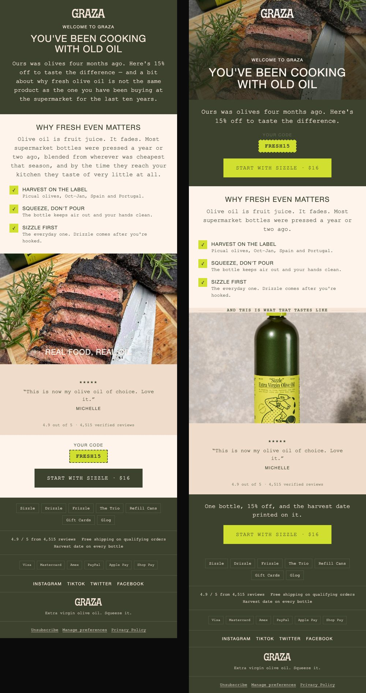
Há founders neste momento a vender menos do que vendiam em plena pandemia. Não é o produto. Não é o facto de os ads terem deixado de funcionar. É que o mercado mudou e a operação não mudou com ele.
Desde 2022 que isto é um slow bleed: o CAC subiu, a conversão desceu, e o cliente deixou de comprar à primeira. A confiança do consumidor está num mínimo histórico — ele já foi enganado duas ou três vezes online, já comprou o produto bonito que era uma desilusão, e já viu vinte marcas com a mesma proposta visual. Só compra quando te vê a quarta, quinta, sexta vez.
O email é o único canal que controlas. Não depende do Zuckerberg, não depende do algoritmo, não depende do CAC. E é por isso que a diferença entre as marcas que estarão vivas em 2029 e as que fecham em 2026 é simples: umas constroem audiência, outras perseguem cliques.
Isto tudo já era verdade em 2024. O que mudou em 2026 foi outra coisa.
O que mudou: o custo de produzir um email caiu a pique
Toda a gente sabia que devia enviar 3 a 4 campanhas por semana. Quase ninguém enviava. Não por falta de estratégia — por fricção. Cada email era um briefing, um designer, três revisões, um export, um upload. Quarenta minutos no melhor dos casos, dois dias no pior.
Isso acabou. Um email bem desenhado passou a custar um prompt e quatro minutos. E quando o custo de produção cai assim, tudo o resto muda: podes enviar mais, podes testar mais, podes dar-te ao luxo de mandar campanhas que geram zero euros porque estão lá só para construir confiança.
Não é "usa AI para escrever emails mais depressa". Escrever nunca foi o gargalo — desenhar e montar é que era. Este guia é sobre isso.
A tese
Em seis linhas
- Escreves a tua marca uma vez. Um ficheiro só. Quinze minutos. Serve os 40 emails seguintes.
- Guardas isso no Claude Design. Uma vez por marca, num design system. Tudo o que fizeres a seguir já sai com a cara certa.
- Cada email é um prompt de três linhas. Porque o contexto pesado já está no sistema.
- O Claude Design desenha. Não te devolve texto para tu montares — devolve o email desenhado.
- Exportas e metes no Klaviyo. A parte chata, reduzida ao mínimo de cliques.
- Repetes. O segundo email demora metade do tempo do primeiro. O décimo demora um quarto.
| Passo | O que é | |
|---|---|---|
| 1 | O brand file | Marca, voz, produtos, objeções. Uma vez, 15 minutos. |
| 2 | O design system | Cores, tipos e fotografia, guardados. Uma vez. |
| 3 | O prompt | Três linhas por email. Não é um briefing. |
| 4 | Fatiar e subir | Corte, imagens, HTML de email. Corre sozinho. |
| 5 | Klaviyo | Flows, campanhas e pop-up em rascunho. Corre sozinho. |
Parte 0
O setup. Uma vez, quinze minutos.
Fazes isto hoje e nunca mais. Tudo o que vem depois assenta aqui.
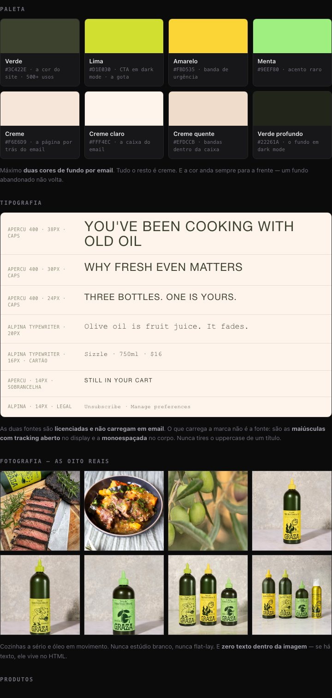
Toda a gente que tenta usar AI para emails falha no mesmo sítio: escreve um prompt gigante de cada vez, com a marca toda descrita outra vez, e o resultado sai diferente em cada email. Sem consistência não há marca.
A solução são dois ficheiros. Escreves uma vez, e depois cada prompt de email começa por "lê estes dois ficheiros". É isto que faz com que o email 7 pareça da mesma marca que o email 1.
O que sai do passo 2
O brand kit
Um design system não é uma folha de regras: é isto. Foi tudo tirado de graza.co — nenhum valor aqui foi inventado, e é essa a diferença entre um kit e uma paleta bonita.
Paleta
Máximo duas cores de fundo por email. Tudo o resto é creme. E a cor anda sempre para a frente — um fundo abandonado não volta.
Tipografia
You've been cooking with old oil
Why fresh even matters
Three bottles. One is yours.
Olive oil is fruit juice. It fades.
Sizzle · 750ml · $16
Still in your cart
Unsubscribe · Manage preferences
As duas fontes são licenciadas e não carregam em email. O que carrega a marca não é a fonte: são as maiúsculas com tracking aberto no display e a monoespaçada no corpo. Nunca tires o uppercase de um título.
Fotografia — as oito reais


Cozinhas a sério e óleo em movimento. Nunca estúdio branco, nunca flat-lay. E zero texto dentro da imagem — se há texto, ele vive no HTML.
Produtos
| Produto | O que é | Preço | A linha |
|---|---|---|---|
| Sizzle | Todos os dias · 750ml · produto de entrada | $16 | Use it every day, in every way. |
| Drizzle | Finalizar · 500ml | $21 | Made for eating, never heating. |
| Frizzle | Calor alto · 750ml | $14 | Your new high heat kitchen hero. |
| The Trio | As três garrafas | $45 | The do-it-all set. |
Voz
"Ours was olives four months ago."
"Looks like your ca(r)t has some issues."
"It takes about 5,000 olives to make one bottle."
Divertida porque é específica. Os números e a origem fazem o trabalho que noutras marcas fazem os adjectivos.
"Premium artisanal olive oil"
"Elevate your culinary experience"
"Curated · indulge · luxury gourmet"
O teste: se a frase pudesse estar num azeite toscano de $40, reescreve-a.
Tudo o que está nesta página foi escrito uma vez e é o que faz os 24 emails saírem da mesma marca. Sem isto, cada email precisa do contexto todo outra vez — e sai diferente de cada vez.
Passo 1 — Escreve o teu brand file
Um ficheiro. Não dois. Leva a marca e as regras de design lá dentro, porque vais colar isto num sítio só.
Não o escrevas à mão. Abre o claude.ai, cola o prompt abaixo com o link da tua loja, e corrige o que sair errado — vai sair errado sobretudo na voz.
Vai a [URL DA MINHA LOJA]: homepage, a página de colecção com todos os produtos, uma página de produto, sobre nós e FAQ. Escreve-me um ficheiro de marca com a estrutura abaixo. Onde não tiveres o dado, escreve FALTA: e diz-me o quê. NÃO INVENTES NADA — nem um nome, nem um número, nem um preço, nem uma citação. MARCA Nome, o que vende em uma frase, AOV e moeda, mercado e língua dos emails. PRODUTOS — com os URLs das imagens Para CADA produto: nome exacto, preço exacto, formato/tamanho, o benefício em 5 palavras, e o URL COMPLETO da foto do produto tal como está no site. Marca qual é o produto de entrada. CLIENTE Quem compra. As 5 objecções antes da primeira compra, por ordem de peso. VOZ 3 adjectivos. 8 frases copiadas do site, à letra. 3 coisas que nunca diria. PROVA — números e citações reais, nada aproximado A nota média e o número exacto de reviews, como aparece no site. 3 reviews completas, com o nome de quem as escreveu. Números públicos: clientes, anos, prémios, imprensa. DESIGN — valores exactos, não descrições Os hex EXACTOS das cores principais (inspecciona a página, não adivinhes): fundo, texto, botão, destaque. Os nomes EXACTOS das famílias tipográficas de título e de corpo, com o peso e se são maiúsculas. O border-radius dos botões. O LOGÓTIPO: se for SVG, copia o código todo; se for imagem, dá o URL. 5 a 10 URLs de fotografias de lifestyle que sirvam de hero. OFERTA Desconto de entrada, limite de portes grátis, e o que a marca pode oferecer sem dar desconto. RODAPÉ Copia a estrutura do rodapé do site: as colunas, os títulos e os links de cada uma, e a linha legal.
Na primeira volta pedimos "cores" e "estilo de fotografia" em prosa. O resultado: inventou a paleta toda, escolheu duas fontes erradas do Google Fonts, fez botões arredondados quando a marca os tem quadrados, pôs o nome escrito no lugar do logótipo, deixou todas as fotos como rectângulos vazios — e inventou um testemunho, "I finally get what the fuss is about — Dana R., verified buyer." A Dana não existe.
Quase nunca é limitação da ferramenta: está tudo no site. O que falta é o prompt ir buscá-lo. Com os hex exactos, os URLs das fotos, o SVG do logo e as reviews com nome, com o prompt certo, sai sem um único campo por preencher.
Por isso: pede valores, não descrições. E antes de enviar, procura no email qualquer nome, número ou citação que não tenhas dado tu.
É o campo que o modelo mais falha, porque os sites institucionais escrevem todos igual. Dois minutos a reescrever isto melhora os 40 emails que vêm a seguir. Nenhum outro campo tem este retorno.
Depois cola no fim do mesmo ficheiro este bloco de regras. É igual para todas as marcas — copia tal e qual.
As 78 linhas de regras de design, em bruto, estão no anexo técnico →
Passo 2 — Cria o design system no Claude Design
O Claude Design é uma ferramenta separada do Claude normal. Fica aqui: claude.ai/design. Precisas de conta Claude paga.
Um design system é a marca guardada uma vez: cores, tipos, componentes, tom. Depois todos os emails que fizeres saem já com essa cara, sem lhe voltares a explicar nada. É por isto que se começa aqui e não por um email.
- Vai a claude.ai/design
A página abre com "What should we create?". Ignora tudo em cima. - Na lista de baixo, clica no separador "Design systems"
Os separadores são Projects · Design systems · Templates. Por defeito estás em Projects. - Clica no botão "Create design system"
Aparece à direita dos separadores, assim que entras em Design systems. - Escolhe "Create here"
Abre uma caixa com duas opções. A outra — "Create using Claude Code" — é para quem tem componentes React de um site. Não é o teu caso. - Preenche os dois campos
Campo de cima (o grande, no topo): descreve em duas linhas o que este sistema serve. Exemplo: [MARCA] — [o que vende]. Este design system serve exclusivamente para EMAILS DE MARKETING enviados por Klaviyo. Cada peça é um email de 600px de largura, lido sobretudo em telemóvel e em dark mode. Campo de baixo (o último da página, com o exemplo "We use a warm, earthy color palette…"): cola aqui o teu brand file inteiro, marca + regras. Os campos do meio — GitHub, Figma, uploads — são opcionais e podes saltá-los todos. - "Continue to generation" e depois "Generate"
Diz 5 minutos. No nosso teste demorou perto de 20. Fazes isto uma vez por marca, nunca mais.
O que sai daqui
No teste com a Graza saíram: os tokens de cor, tipo e espaço em light e dark, 18 componentes de email, 18 cartões de guidelines, três templates, e — sem lhe pedirmos — quatro emails já escritos: o primeiro do welcome, o primeiro do carrinho abandonado, e duas campanhas.
No fim, sem lhe perguntares, ele diz-te o que lhe falta. São quase sempre as mesmas cinco coisas:
- O logótipo. Pôs o nome escrito na fonte de display, como marcador. Não desenha logos.
- As fontes. Escolheu substitutos do Google Fonts a partir da descrição que lhe deste.
- A fotografia. Cada slot de imagem fica um rectângulo com a direcção de arte escrita lá dentro.
- Os ícones. Usou sinais de texto, porque o email bloqueia SVG.
- Os hex da paleta. Inventou-os a partir do teu brief — dá-lhe os reais e ele re-deriva o sistema todo, dark mode incluído.
Junta essas cinco coisas antes de enviares seja o que for. É a diferença entre um protótipo bonito e um email que podes mandar.
O brand file
15 min, prompt 00O design system
5 min, no Claude DesignO prompt do email
3 linhas, sai desenhadoFatiar e subir
arte vira imagem, o resto fica vivoKlaviyo, em rascunho
templates, flows, campanhasOs dois primeiros passos fazem-se uma vez por marca. Os três seguintes repetem-se por cada email — e os dois últimos não se fazem: correm.
Sem design system, cada email precisa do contexto todo outra vez — e sai diferente de cada vez. Com ele, o prompt de cada email passa a ter três linhas, e o email 7 parece da mesma marca que o email 1. É a peça que faz o resto do guia funcionar.
Passo 3 — O primeiro email
Com o design system feito, ficas dentro do projecto, com uma caixa de texto: "Describe what you want to create…". É aqui que colas os prompts das Partes 2 e 3 deste guia.
São curtos porque não precisam de explicar a marca — ela já está no sistema.
- Cola o prompt do email que queres
Começa pelo email 1 do welcome flow. É o que mais fatura de toda a tua operação.
Nota chata mas real: a caixa de texto engole as quebras de linha se colares com o rato. Cola com⌘Vnormal e confirma que os bullets ficaram lá antes de enviares. - Corrige com uma frase, não com um prompt novo
"O botão está pequeno demais e a review devia estar acima do produto" resolve mais do que reescrever tudo do zero. - Exporta
HTML se a tua plataforma aceitar; senão, imagem por bandas. - Mete no Klaviyo
É onde ainda há fricção. Ver abaixo.
Este último passo é o que vale mais, e é o único que não se faz no Claude Design. Um comando de Claude Code pega no export, corta as bandas, e cria o template no Klaviyo pela API — sem abrires o editor deles.
Está inteiro na Parte 6, com o prompt que o corre.
Parte 1
O que é, exactamente, um bom email
Seis regras. Não são teoria de marketing — são o esqueleto invisível que encontras sempre que analisas um email que funciona.
| Regra | O teste | |
|---|---|---|
| 1 | 600px valem 90% | Logo, promessa e botão antes da dobra. |
| 2 | 1 email = 1 tópico | Dois assuntos são dois emails. |
| 3 | Short and punchy | Sem gordura, com hierarquia. |
| 4 | Usa infográficos | Ver, não ler. |
| 5 | A transição liga | Só onde a cor muda, e pertence à banda de cima. |
| 6 | Dark mode primeiro | A arte é imagem. 82% lê no escuro. |
| 7 | Abre com visual | Fotografia à largura toda, nunca cor chapada. |
Escrevi e revi milhares de emails de ecommerce. Estas seis coisas explicam quase toda a diferença de performance entre um email que converte e um que não. Domina-as e os teus emails vão ser abertos, lidos e clicados consistentemente — partindo do princípio, claro, de que estás a enviar conteúdo relevante para o teu cliente.
A razão de estarem aqui, antes dos prompts, é simples: elas já estão dentro do teu design system. Precisas de as perceber para saberes o que estás a corrigir quando o resultado não sai bem.
1. Esquece o email como um todo. 90% do teu tempo vai para os primeiros 600px.
A esmagadora maioria das pessoas nunca faz scroll. O que decide se o teu email funciona ou não acontece num ecrã.
A checklist do above the fold
- Sem links para páginas de categoria — só o logótipo, com link para a homepage
- Oferta e código de cupão visíveis, se for o caso
- Copy que cria curiosidade ou abre um loop
- CTA visível sem scroll
- Logótipo da marca, para gerar confiança imediata
- Hierarquia visual clara
- Texto alinhado ao centro
- Imagens comprimidas
2. Um email, um tópico
Emails que tratam de um assunto batem sistematicamente os que tentam tratar de três. Se tens três coisas para dizer, tens três emails — e isso é bom, porque três emails é mais receita do que um.
3. Short and punchy
Os attention spans nunca estiveram tão baixos e tu sabes disso porque também és assim.
- Evita grandes blocos de texto
- Remove a gordura — tira palavras sem perder o sentido da frase
- Lê a copy em voz alta; se soa estranho, muda
- Formata (negrito, itálico, espaçamento) para guiar o olho
- A oferta é o primeiro elemento que o leitor vê
4. Infográficos em vez de parágrafos
Ninguém quer ler blocos de texto. Um infográfico entrega a mesma informação num piscar de olhos. Tipos que funcionam bem em email:
| Tipo | Usa para |
|---|---|
| Linha temporal | História da marca, prazos de envio, etapas até um resultado |
| Fluxograma | Guiar o cliente numa decisão (que produto é para mim?) |
| Checklist | O que vem incluído, como usar |
| Bullets com ícones | Benefícios, três razões, o que nos torna diferentes |
| Diagrama | Porque é que o produto é bom, anatomia do produto |
| Tabela comparativa | Nós vs. eles, comparação de planos ou tamanhos |
| Gráfico | Resultados, satisfação, tendências |
Esta é, das seis regras, a que mais ganha com a máquina. Um infográfico à mão era meia hora de designer. Agora é uma frase.
Estás no design system desta marca. Segue as regras de design que lá estão. Desenha um infográfico para meter dentro de um email, 600px de largura, do tipo [TABELA COMPARATIVA / LINHA TEMPORAL / CHECKLIST / BULLETS COM ÍCONES]. Assunto: [ex: porque é que o nosso material dura 3x mais que o do costume] Regras: - Texto real, não texto dentro de imagem. Tem de inverter em dark mode. - Máximo 6 linhas de informação. Se tenho mais, corta o menos importante. - Usa as cores do design system, não uses cores novas. - Legível a 375px de largura sem zoom.
5. Transições
Cada secção do email é uma ponte narrativa. Sem transição, o email parece que reinicia várias vezes, o flow de leitura quebra, e o leitor perde o fio.
Um bom email é uma única linha de pensamento. Cada bloco tem de nascer do anterior, como se fosse inevitável continuar a ler. E atenção: uma transição liga conteúdo. Uma forma decorativa entre dois blocos que não têm nada a ver um com o outro não é uma transição — é enfeite.
6. Optimiza para dark mode
82% dos utilizadores usam dark mode. Isto não é estética, é conversão e branding.
E o objectivo não é o que a maioria das pessoas pensa. Não se trata de o email inverter bem. Trata-se de o email não mudar absolutamente nada quando o cliente está em dark mode. O que tu desenhaste é o que a pessoa vê, sempre.
A solução é uma só: 0% de texto vivo. As bandas de arte — hero, infográficos, tabelas, blocos de oferta — saem como imagem. O que é imagem não inverte, não muda de cor, não parte, não escolhe outra fonte porque a tua não carregou.
As três excepções que ficam sempre em texto vivo
- O bloco de produto dinâmico. As variáveis do Klaviyo têm de ser texto, senão não há nada para o Klaviyo substituir.
- O rodapé. Os links têm de ser clicáveis e o unsubscribe tem de ser texto real, por lei.
- Os emails de texto do fundador. Esses são texto puro de propósito, e por isso o dark mode não lhes faz mal nenhum.
Nessas três, escolhe cores que aguentem os dois modos e nunca uses cinzentos claros para texto.
Manda o email para ti próprio. Abre-o no telemóvel com o dark mode ligado, e depois com o dark mode desligado. Se houver uma única diferença entre os dois, não está pronto.
Parte 2
Os flows
Cinco flows, 17 emails. É o trabalho que se faz uma vez e depois fatura sozinho todos os meses.
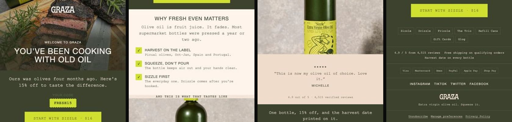
Os flows são a mensagem certa no momento certo, para converter. Não são eles que mantêm a tua lista engajada — isso é o papel das campanhas, na Parte 3. Mas são eles que pagam as contas enquanto dormes.
Cada email abaixo tem: para que serve, três subject lines para testares, a dica que decide se funciona ou não, e o prompt.
O Klaviyo traz o Smart Sending ligado por defeito. Desliga-o em todos os emails de flow, senão pessoas que deviam receber não recebem.
Welcome Flow
4 emails. O flow mais rentável que vais ter, sem sequer estar perto.
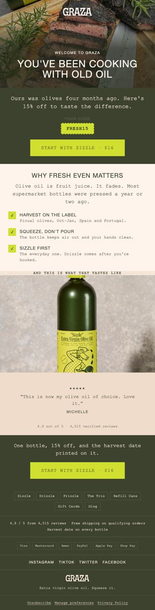
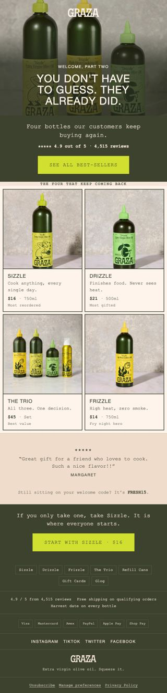
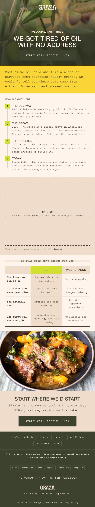
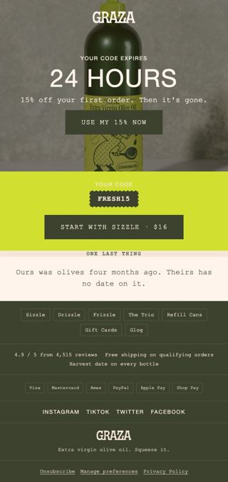
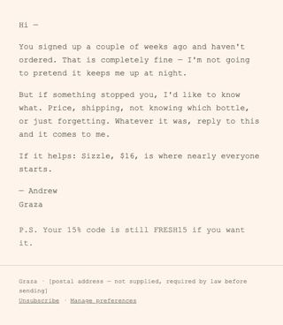
Estás a pagar mais de €1 por clique e 98 em cada 100 pessoas saem sem comprar. O welcome flow converte 5 a 10 vezes mais do que retargeting, funciona 24/7, e não custa nada por envio.
Os 16,25% assumem 50% da faturação a vir de email e 50% desse email a vir de flows. É por isto que na prática alocamos mais tempo a este flow do que a todos os outros juntos.
Porque é que funciona
As pessoas não compram se não confiarem. O email dá-te múltiplos toques gratuitos para ganhar essa confiança: entregas o incentivo prometido, contas a história da marca, resolves objecções com educação, e guias com um CTA claro por email. Cada email sobe o nível do potencial comprador.
Só têm 2–3 emails, insuficiente para criar confiança · informação a menos, ou informação a mais toda num email só · demasiado agressivos, a tentar forçar a compra antes de quebrar as objecções · não excluem compradores do flow, o que é spam e queima reputação.
A lógica é esta: se as pessoas têm objecções, precisas de um email por objecção. A estrutura abaixo cobre as objecções globais de qualquer marca de ecommerce. Se sabes de outras específicas da tua, o teu welcome flow deve ser maior.
Estás no design system desta marca. Segue as regras de design que lá estão. Vais desenhar-me o welcome flow desta marca, em 4 emails. Antes de desenhar, lista-me as objecções que este cliente tem antes da primeira compra, por ordem de peso, e diz-me qual email quebra qual. Se alguma objecção importante não ficar coberta pela estrutura abaixo, diz-me e propõe onde entra. Estrutura: 1. Introdução + desconto 2. Best sellers 3. História da marca + porquê nós 4. Última chance (desenhado) + check-in do founder (texto simples) Regras para o conjunto: - Nenhum layout se repete entre emails. - O email 1 é o mais importante de toda a estratégia: dá-lhe o dobro do cuidado. É ele que tem de fazer 60% de abertura e 8% de compras. - Diz-me os delays entre emails e justifica-os com o ciclo de decisão deste produto, não com uma regra genérica. Começa pela lista de objecções e pelo plano. Não desenhes nada até eu aprovar.
Depois de aprovares, pedes um a um. Não peças os sete de uma vez — a qualidade cai. Abaixo estão os prompts individuais.
Email 1 Introdução + desconto
Converte novos subscritores enquanto a atenção está no pico. Constrói confiança imediata e faz a primeira venda com o incentivo certo.
- Bem-vindo/a à {MARCA}!
- Os teus {X}% OFF estão aqui
- O teu presente de boas-vindas está aqui 🎁
Botão e código de desconto above the fold. Não os escondas lá para baixo. É o erro mais caro deste flow inteiro.
Estás no design system desta marca. Segue as regras de design que lá estão. Desenha o EMAIL 1 do welcome flow: entrega do desconto de boas-vindas. - Este é o email mais importante de toda a estratégia. Above the fold tem de ter: logo, headline de boas-vindas, o valor do desconto em grande, o código, e o botão. Tudo nos primeiros 600px. - Abaixo da dobra: uma razão para confiar (não um catálogo) e nada mais. - Não metas navegação de categorias. Nada que leve o olho para fora do botão. - Dá-me 3 subject lines e 3 preview texts, cada par a testar um ângulo diferente: presente, urgência, curiosidade.
Email 2 Best sellers
Converter mostrando os produtos mais populares e validados pela comunidade.
- Os favoritos da nossa comunidade
- O que toda a gente está a comprar agora
- Estes esgotam sempre
Mostra 3 a 6 produtos, não catorze, e fecha com um CTA "ver todos os best-sellers".
Estás no design system desta marca. Segue as regras de design que lá estão. Desenha o EMAIL 2 do welcome flow: best sellers. - Escolhe 4 produtos do design system. Para cada um: foto, nome, preço, e o benefício em no máximo 5 palavras. Nada de descrições longas. - Above the fold: uma headline que diz que estes são os validados pela comunidade, com prova (número de clientes, reviews) se existir no design system. - Fecha com um CTA único: ver todos os best-sellers. - Relembra o código de desconto uma vez, discretamente, no fim. - Layout diferente do email 1: se o 1 era centrado e vertical, este é grelha.
Email 3 História da marca + porquê nós
Reforçar a ligação emocional e, no mesmo fôlego, dizer o que vos torna diferentes. Cria confiança e responde à objecção "porquê esta marca e não a do supermercado".
- A nossa história: como tudo começou
- Porque fazemos o que fazemos
- 3 razões pelas quais os clientes nos adoram
Tom pessoal, uma foto real do fundador, e benefícios em vez de características. Sem foto real isto lê-se como texto de agência.
Estás no design system desta marca. Segue as regras de design que lá estão. Desenha o EMAIL 3 do welcome flow: a história da marca e o que a torna diferente. São as duas coisas no mesmo email, ligadas — a história explica porque é que a diferença existe. - Estrutura: o problema que existia no mercado -> o momento em que decidimos fazer diferente -> o que isso significa para quem compra hoje. - Usa uma linha temporal como infográfico. Máximo 4 marcos. - Reserva espaço para foto real do fundador, com legenda de uma linha. - Depois da história, uma TABELA COMPARATIVA: nós vs. a alternativa habitual. 4 linhas, benefícios e não características. Não nomeies concorrentes — diz "a maioria das marcas". - Escreve na primeira pessoa, na voz da marca, não em voz institucional. - Termina com CTA de compra, não com "saber mais". - Layout diferente dos emails 1 e 2.
Email 4 Última chance + check-in do founder
Fechar com urgência real, e recuperar os indecisos com uma mensagem humana. São dois envios no mesmo dia, ou dois emails com um dia de intervalo — o primeiro desenhado, o segundo em texto simples.
- Últimas horas para comprar e poupar
- A acabar em breve…
- Está tudo bem? pfv lê
O desenhado leva código e CTA no topo com contador. O de texto é a 1:1, com ajuda genuína e o desconto relembrado quase como PS. É o email que mais ganha em ser text-based.
Estás no design system desta marca. Segue as regras de design que lá estão. Desenha o EMAIL 4 do welcome flow: última chance para usar o desconto. - Above the fold: contador de tempo, o desconto, o código, e o botão. Nada mais compete com isto. - O email inteiro cabe em pouco mais de um ecrã. Se está a ficar comprido, corta. - Um lembrete curto de porque vale a pena — uma linha, não um parágrafo. - Nada de argumentos novos. Quem chegou aqui já os ouviu todos.
Estás no design system desta marca. Escreve o email de fecho do welcome flow: check-in pessoal do fundador. Este é TEXT-BASED. Sem header, sem footer de design, sem imagens, sem botão desenhado. Tem de parecer um email escrito à pressa por uma pessoa real. - Máximo 90 palavras. - Abre a reconhecer que a pessoa se inscreveu e ainda não comprou, sem culpa. - Oferece ajuda concreta: uma pergunta a que se possa responder. - O link do desconto aparece como link de texto, no fim, quase como PS. - Assinatura com o primeiro nome do fundador. - Sender name: "[Nome] | [Marca]". - Não uses uma única palavra de marketing.
[postal address missing] não é defeito: a morada física é obrigatória por lei em email comercial, e ele deixa o campo à vista até tu a dares.Depois de o flow estar a correr
- Reenvia o email 1 a quem não abriu nas primeiras 24h. Muda só a subject line e o preview text; o conteúdo fica igual. É o email que mais converte — queres garantir que o máximo de pessoas o vê.
- Não pares nos 4. Vai às tuas campanhas passadas, identifica as que tiveram melhor performance, vê quais são evergreen (relevantes o ano todo) e encaixa-as no fim do welcome flow. Estás a reaproveitar conteúdo já comprovado.
- KPIs. Email 1: 60%+ abertura, 12%+ cliques, 8%+ compras. Restantes: 35%+ abertura (é normal ir descendo), 2%+ cliques, 0,5%+ compras.
A versão completa deste flow tem 7 emails e é a que corremos em clientes. Mas olha para os KPIs acima: o email 1 faz 8% de compras, os seguintes fazem 0,5%. Os emails 5, 6 e 7 são muito trabalho para pouco retorno — e são exactamente onde a maioria das pessoas desiste a meio e fica sem flow nenhum.
Monta estes 4. Quando estiverem a render, a secção Quando já tiveres isto a render diz-te o que acrescentar e por que ordem.
Site Abandon Flow
2 emails. O flow que quase ninguém tem — e é dos mais fáceis de montar.
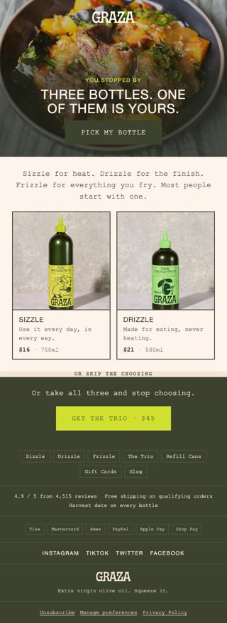
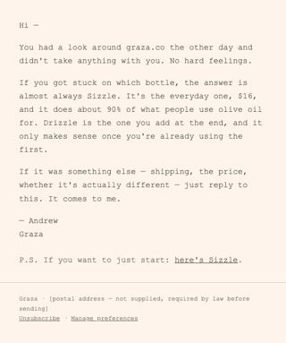
Toda a gente fala de cart abandon. Alguns já falam de browse abandon. Mas e as pessoas que entram no teu site e saem sem ver um único produto?
Setenta por cento do teu tráfego morre à porta da loja. Tráfego que já pagaste.
A objecção mais provável de quem sai sem ver nada é simples: não sabe o que escolher. O flow todo responde a isso — mostra best-sellers ou categorias.
10.000 pessoas/mês abandonam o site sem ver produto · 2% convertem com este flow · AOV de €75 → +€10.500/mês em tráfego que já tinhas. Dinheiro encontrado no chão.
Email 1A / 1B Perdido em escolhas?
Reduzir indecisão mostrando os best-sellers, enquanto o interesse ainda é recente. A versão B leva desconto.
- Ainda a pensar?
- Não sabes por onde começar?
- Os nossos favoritos!
Reconhece a visita anterior. Tom leve e útil, sem pressão.
Estás no design system desta marca. Segue as regras de design que lá estão. Desenha o EMAIL 1 do site abandon flow, em duas versões (A sem desconto, B com desconto) para eu testar uma contra a outra. Contexto: esta pessoa entrou no site e saiu sem ver nenhum produto. A objecção dela é não saber por onde começar. - Above the fold: reconhecer a visita numa linha, e a promessa de facilitar a escolha. Tom de ajuda, nunca de venda. - Corpo: 3 categorias OU 4 best-sellers — recomenda-me qual faz mais sentido para esta marca e porquê. - Versão B: o desconto de entrada aparece no topo, não no fim. - CTA único por versão.
Email 2 Lembrete do desconto de boas-vindas
- Só um lembrete: o teu desconto ainda está ativo
- O teu presente de boas-vindas está à tua espera
- Não percas o teu {X}% de desconto
É parecido com o check-in do founder do welcome flow, mas aqui começas por reconhecer que a pessoa esteve a ver o site.
Estás no design system desta marca. Segue as regras de design que lá estão. Escreve o EMAIL 2 do site abandon flow, text-based, do fundador. - Máximo 80 palavras. - Primeira linha: reconhecer que a pessoa esteve a ver o site, sem soar a vigilância. Nada de "reparámos que visitaste". - Relembrar o desconto ainda activo, com link de texto. - Uma pergunta genuína no fim, a convidar resposta.
Por defeito o Klaviyo não tem o Onsite Tracking activo. Vai a klaviyo.com/integration/shopify, activa todas as checkboxes. Sem isto, o flow nunca dispara.
Browse Abandon Flow
3 emails. Transforma curiosidade em venda.
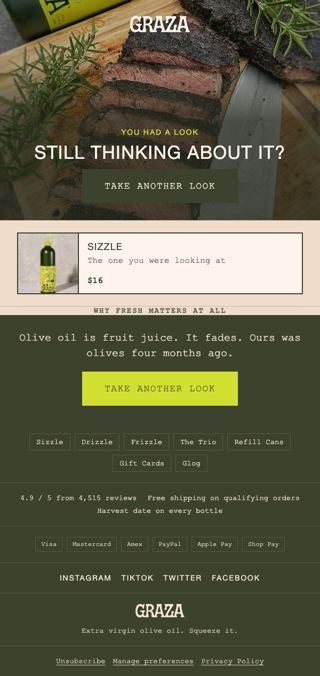
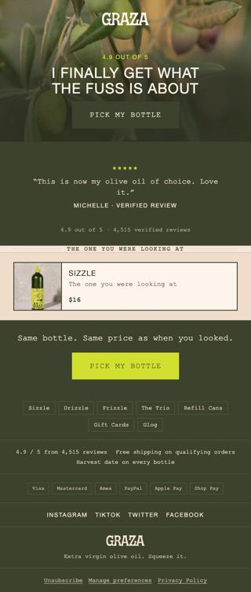
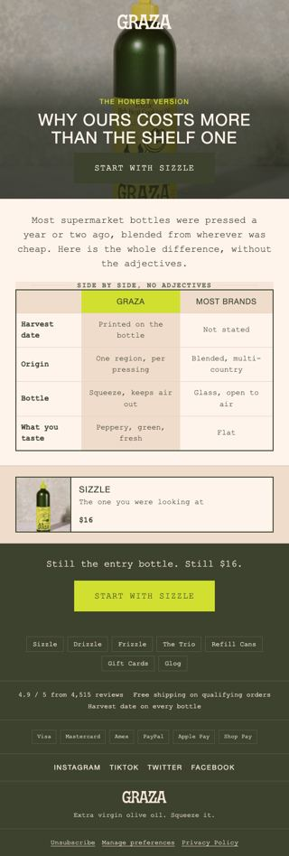
A maioria das pessoas que vê uma página de produto vai-se embora. Não é falta de interesse — é falta de razões para confiar e agir agora.
Dar o desconto logo no primeiro email · meter informação a mais no primeiro em vez de "só lembrar" · não incluir o produto dinâmico que a pessoa viu · pôr o produto dinâmico demasiado abaixo · usar linguagem salesy em vez de um lembrete com personalidade.
Pôr "descobre os nossos best sellers" no primeiro email não aumenta a conversão — testado, e o resultado repete-se.
O primeiro email de cada flow deve ser o que mais fatura — mesmo sem desconto. Neste flow, o primeiro email a só lembrar costuma faturar mais do que os últimos com desconto. Se não está a acontecer contigo, o teu primeiro email está mal feito.
Um comentário no HTML não serve. Quem vai substituir o bloco é uma máquina, e uma máquina não lê <!-- produtos aqui -->. Declara-se em atributos, no <div> que embrulha os cartões:
Desenhas com produtos a sério — Sizzle a $16 — para o email se poder julgar. Depois a máquina troca cada valor de exemplo pela variável declarada e embrulha tudo num {% for %}. O que sai é um email que mostra o carrinho de cada pessoa.
Porquê [[ ]] e não {{ }}? Porque o motor do Claude Design interpreta {{ }} dentro de atributos e substitui-o por vazio. Perdes as variáveis e o HTML continua a parecer válido — é o tipo de falha que só se descobre num envio real.
No browse abandon não há lista. O Klaviyo traz um produto, não vários: declara só data-klaviyo-fields, sem loop, e não há ciclo nenhum.
Email 1 Empurrão suave
- Vimos-te por aqui
- Dá mais uma olhada
- Pronto para melhorar o teu {produto}?
Bloco dinâmico com o produto visto, bem acima. CTA tipo "voltar a ver". Copy curta e visual.
Estás no design system desta marca. Segue as regras de design que lá estão. Desenha o EMAIL 1 do browse abandon flow. Este email só faz uma coisa: lembrar. Não vende, não educa, não desconta. - O produto que a pessoa viu tem de estar nos primeiros 600px. Deixa-me um bloco claramente marcado como PRODUTO DINÂMICO, com espaço para imagem, nome e preço — vou preencher com variáveis do Klaviyo. - Uma linha de copy com personalidade acima do produto. Nada de "reparámos que estavas a ver". - CTA: voltar a ver o produto. - Máximo 60 palavras no email todo. Se está mais longo, corta. - SEM desconto. Sem grelha de outros produtos.
Email 2 Prova social
- O que os nossos clientes dizem
- Vais adorar, eis o porquê…
- Confiada por milhares
Abre com a review mais forte, e mantém o bloco dinâmico do produto visto para reforçar contexto.
Estás no design system desta marca. Segue as regras de design que lá estão. Desenha o EMAIL 2 do browse abandon flow: prova social sobre o produto visto. - Above the fold: a review mais forte do design system, como protagonista. - Logo abaixo: o bloco de PRODUTO DINÂMICO (imagem, nome, preço, botão). - Se houver um número forte (x clientes, x reviews, média de estrelas), mete-o como selo junto ao produto. - Ainda sem desconto.
Email 3A / 3B Ainda a pensar?
A: última oportunidade com um toque pessoal do fundador. B: fechar com urgência e um pequeno desconto por tempo limitado.
- A · Passa-se algo?
- A · O teu favorito ainda está à tua espera…
- B · FLASH SALE: {X}% OFF por 24h
- B · {X}% OFF no produto que viste hoje apenas…
Estás no design system desta marca. Segue as regras de design que lá estão. Desenha o EMAIL 3 do browse abandon flow, em duas versões: A) Text-based do fundador. Tom 1:1, empático, disponível para ajudar, sem pressão. Máximo 70 palavras. Menciona o produto pelo nome. B) Com desconto. Desconto e CTA above the fold, contador de tempo para FOMO, bloco de PRODUTO DINÂMICO logo abaixo. Curto. Diz-me qual recomendas testar primeiro para esta marca em concreto.
Conteúdo dinâmico — o elemento mais importante
É o que muda de cliente para cliente e mostra exactamente o que cada um deixou para trás. Aumenta drasticamente a conversão. Usa sempre o Preview do Klaviyo antes de activar, para confirmar que carrega.
Cart & Checkout Abandon
4 emails, que servem carrinho e checkout. 70 a 85% dos carrinhos são abandonados.
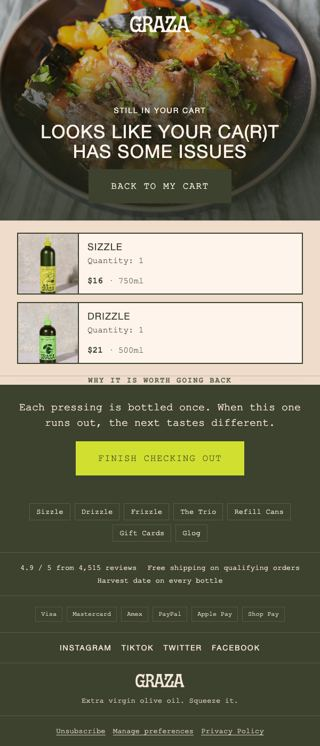
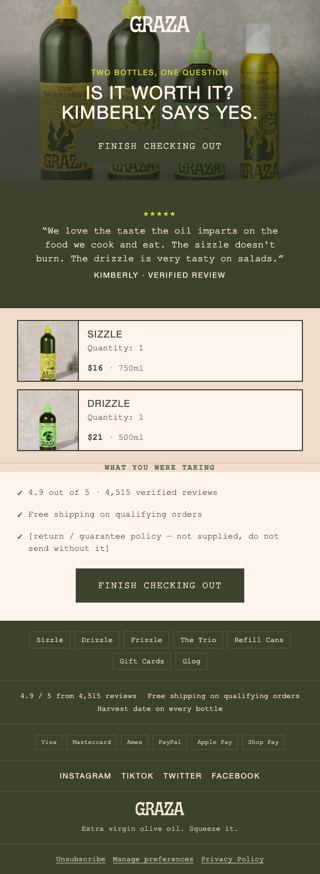
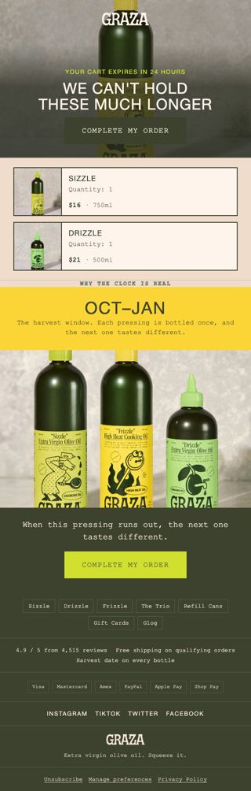
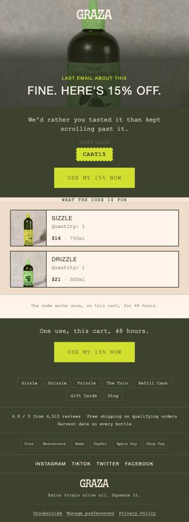
Se dez pessoas entram na tua loja e sete saem com o carrinho cheio sem pagar, tens um problema. Se recuperares apenas 20% desses carrinhos, aumentas o lucro em 15–25% sem gastar mais um euro em anúncios.
A psicologia do abandono
Não é o preço. Não é o produto. É o cérebro humano — distraído, ansioso e sobrecarregado. O que se passa é isto:
- Curiosidade e euforia. "Uau, isto é exactamente o que eu procurava."
- Dúvida. "Será que vale o preço? Chega a tempo? E se não servir?"
- Distração. Uma notificação, o Instagram, uma reunião. O carrinho morre ali.
- Comparação e medo. "Talvez encontre melhor. Não quero ser enganado."
As pessoas não te estão a rejeitar — estão a adiar. E quem chega primeiro à memória delas ganha a venda. O teu trabalho não é empurrar, é reacender a intenção.
Email 1 Empurrão suave
- Esqueceste-te de algo
- O teu carrinho está à espera
- Quase lá — só falta um clique
Estás no design system desta marca. Segue as regras de design que lá estão. Desenha o EMAIL 1 do cart abandon flow. - Só relembra. Sem desconto, sem argumentos novos, sem catálogo. - Bloco de produtos do carrinho nos primeiros 600px: imagem, nome, quantidade, preço. DECLARA-O (ver a caixa em baixo) — não basta comentá-lo, tem de ser legível por uma máquina. - CTA único e directo: voltar ao carrinho. - Uma linha de copy acima, com a voz da marca. Não sejas agressivo. - O email inteiro cabe em um ecrã e meio.
Email 2 Prova social
- Adorado por milhares
- Vê o que os nossos clientes estão a dizer
- Ainda indeciso? Isto pode ajudar
Uma review muito boa, ou duas a três curtas. Não mais.
Estás no design system desta marca. Segue as regras de design que lá estão. Desenha o EMAIL 2 do cart abandon flow: prova social. - Escolhe do design system a review que responde à objecção mais provável de quem chega ao carrinho e não paga. Diz-me qual objecção escolheste e porquê. - Review em destaque above the fold, com nome e localização. - Bloco de produtos do carrinho logo abaixo, declarado (ver caixa). - Se a marca tem garantia ou devolução fácil, mete isso como selo — é aqui que resolve mais.
Email 3 Última chance
- Última oportunidade para finalizares a tua encomenda
- O teu carrinho está quase a desaparecer
- Não deixes isto escapar
Estás no design system desta marca. Segue as regras de design que lá estão. Desenha o EMAIL 3 do cart abandon flow: urgência. - Above the fold: a urgência (carrinho a expirar / stock limitado) e o botão. - Bloco de produtos do carrinho declarado, com produtos de exemplo reais. - CTA forte: finalizar o pedido. - Ainda sem desconto — o desconto só entra no email 4. - Curto. Máximo 50 palavras de copy.
Email 4 Desconto de fecho
Converter a hesitação que sobra, com um desconto limitado aplicado ao que ficou no carrinho.
- Aqui tens {X}% de desconto – só hoje
- Flash Sale no teu carrinho – despacha-te
- Últimas horas para usares o teu {X}% de desconto
AOV abaixo de €100 → percentagem (5–15%). Acima de €100 → valor fixo (€15–30). A mesma regra da oferta do pop-up, e pela mesma razão: abaixo de €100 uma percentagem soa maior do que o euro que representa; acima, o euro soa maior do que a percentagem.
Mostra sempre o preço antes e depois — ver o valor final é o que faz o clique.
Estás no design system desta marca. Segue as regras de design que lá estão. Desenha o EMAIL 4 do cart abandon flow: o desconto de fecho. - Desconto e prazo (24h ou 48h) no topo, em grande, com contador. - Bloco de produtos do carrinho declarado, com o preço antes e depois do desconto. O preço final é o elemento maior. - Um único CTA: completar a compra. - Curto. Máximo 50 palavras de copy. A oferta segue esta regra: AOV abaixo de €100 usa PERCENTAGEM (5-15%); acima de €100 usa VALOR FIXO (€15-30). Aplica a que corresponde a esta marca e diz-me qual usaste.
Setup técnico
Por defeito o Klaviyo não capta este evento. Vai a klaviyo.com/integration/shopify e activa o Track behavioral events. Hoje já não precisas de mexer no código do tema.
Post-Purchase
4 emails. O flow que 99% das marcas não tem — e é aqui que está o lucro.
99% das marcas estão viciadas em aquisição. Gastam milhares por mês em Meta e TikTok, têm flows para tudo — welcome, browse, cart, checkout — e depois de uma compra? Nada. Zero follow-up, zero experiência pós-compra, zero razão para voltar.
O marketing não acaba no checkout. É a partir daí que começa o jogo a sério.
O custo real de não reter
| Métrica | 1ª compra | 2ª compra |
|---|---|---|
| AOV | $100 | $100 |
| Margem | 60% | 60% |
| Lucro bruto | $60 | $60 |
| CAC | $33,33 | $0 |
| Lucro líquido | $26,67 | $60 |
Porque se segmenta por número de compras
Enviar os mesmos emails a toda a gente mata a relevância. Cada tipo de cliente está num estado mental diferente:
- 1x buyer — precisa de confiança, educação, prova de valor. Está em modo "estou a testar esta marca".
- 2x buyer — tem confiança, precisa de incentivo para virar VIP. Modo "isto é fixe, talvez repita".
- 3x buyer — é leal, quer acesso exclusivo e reconhecimento. Modo "isto é a minha marca".
- 4x+ buyer — está investido emocionalmente, quer sentir que faz parte. Modo "eu sou parte disto".
1. Confundir com o order confirmation. Um serve para logística, o outro para lucro. E o Klaviyo não serve para flows logísticos — os delays são estáticos. Usa uma app dedicada a tracking e mantém o Klaviyo onde brilha: vendas.
2. O mito das "3 horas mágicas". Testei várias vezes e funcionou sempre pior, sobretudo em first-time buyers. A pessoa acabou de comprar, ainda nem recebeu o produto — porque haveria de comprar outra vez? Espera, nutre, educa, vende mais tarde. Nota: isto não invalida upsell na página de checkout, que é outra coisa e funciona.
3. O mesmo flow para todos. Podes repetir campanhas com meses de intervalo — ninguém se lembra. Mas nunca repitas emails no post-purchase. Depois do checkout a fasquia é mais alta: o cliente já confiou em ti e espera relevância. Se não queres criar caminhos diferentes, tudo bem — mas não metas um 3x buyer no caminho dos 1x. Melhor zero conteúdo do que conteúdo irrelevante.
A espinha: Conexão → Educação → Upsell
Independentemente de quantos emails tenhas, a ordem é sempre esta. Primeiro criar ligação, depois ensinar a usar, só no fim vender outra vez.
Estás no design system desta marca. Segue as regras de design que lá estão. Desenha-me o caminho de post-purchase para 1x BUYERS desta marca. Espinha obrigatória: CONEXÃO -> EDUCAÇÃO -> UPSELL. Nunca ao contrário. Antes de desenhar seja o que for, dá-me a lista de emails com: - O papel de cada um (conexão / educação / upsell) - O delay em dias - O assunto em uma linha Adapta ao produto: se é consumível, o upsell entra quando estiver a acabar. Se é durável, o upsell é um complemento e entra mais tarde. Diz-me qual é o caso desta marca e justifica os delays com base nisso. Não desenhes nada até eu aprovar a lista.
Email 1 Obrigado
- Obrigado pela tua encomenda
- És a razão pela qual fazemos isto
- A tua compra significa muito para nós
Tom pessoal e humano, zero vendas. Este email não vende nada.
Estás no design system desta marca. Segue as regras de design que lá estão. Escreve o EMAIL 1 do post-purchase: agradecimento, para 1x buyers. - ZERO venda. Nem um link de produto. Se aparece um botão de compra, falhaste. - Dá à pessoa a sensação de ter entrado em algo — um nome para a comunidade, se a marca tiver ou puder ter. - Mostra que há uma equipa real do outro lado. - Máximo 100 palavras. - Dá-me a versão para 2x, 3x e 4x buyers também: mesma estrutura, mas o reconhecimento sobe de intensidade a cada nível.
Email 2 Como usar o produto
- 3 dicas para aproveitares ao máximo o teu [produto]
- Já tens o produto — agora usa-o como deve ser
- Espera! Não uses o [produto] antes de leres isto
3 a 5 dicas práticas e visuais, mostra erros comuns, sugere como integrar na rotina. Reduz devoluções e activa o hábito de uso.
Estás no design system desta marca. Segue as regras de design que lá estão. Desenha o EMAIL 2 do post-purchase: como usar o produto. - Formato: checklist numerada ou linha temporal (regra 4), não parágrafos. - 4 dicas. Uma delas tem de ser um erro comum a evitar. - Above the fold: a promessa de resultado, não "obrigado outra vez". - Se o produto tiver cuidados de manutenção, propõe-me um email 3 separado só para isso — e diz-me se vale a pena nesta marca. - Sem CTA de compra.
Email 3 Check-in do founder
- Só a passar para ver como estás
- Uma nota do nosso fundador
- Como está a correr até agora?
Que pareça uma mensagem 1:1 escrita pelo fundador. Tom simples e caloroso, convite directo a responder. As respostas a este email são ouro para a copy futura.
Email 4 Crédito e upsell
- Acabaste de ganhar {valor}€ em crédito — 48h
- Tens {valor}€ para usar hoje
- Últimas 24h para usares o teu crédito
Crédito e validade no topo. Três produtos recomendados com o preço antes e depois de aplicar o crédito. Ver o preço final é o que faz o clique.
Estás no design system desta marca. Segue as regras de design que lá estão. Desenha o EMAIL de upsell do post-purchase, com crédito em loja. - Above the fold: o valor do crédito, a validade (48h), o botão. - Corpo: 3 produtos recomendados, e para cada um mostra o preço normal riscado e o preço depois do crédito. O preço final é o elemento maior. - Escolhe produtos que complementem o que a pessoa já comprou, não substitutos. Diz-me o critério que usaste. - Tom de oferta, não de venda. É uma surpresa, não uma promoção. Dá-me também a versão REMINDER, mais curta, com contador.
O caminho VIP — "+1 compra = acesso VIP", o reminder da recompensa, a oferta exclusiva de quem chega lá — não é um flow à parte. Na prática é uma campanha para o segmento VIP, e está tratado como tal na Parte 3. Montar um flow VIP antes de teres o post-purchase a render é otimizar o que ainda não existe.
Parte 3
Campanhas
Os flows convertem quem já está pronto. As campanhas fazem com que existam pessoas prontas.
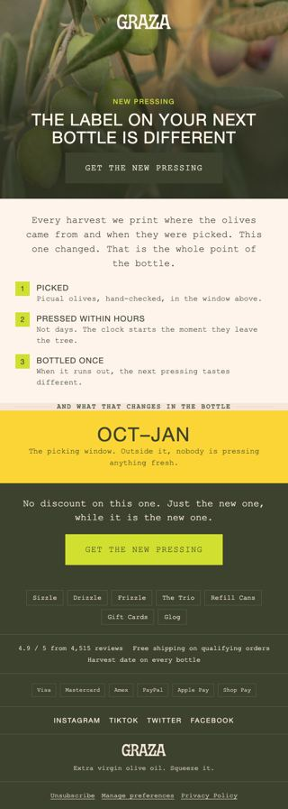
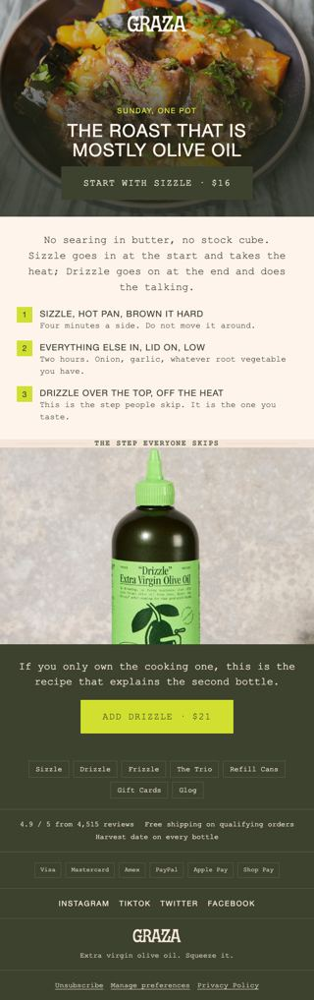
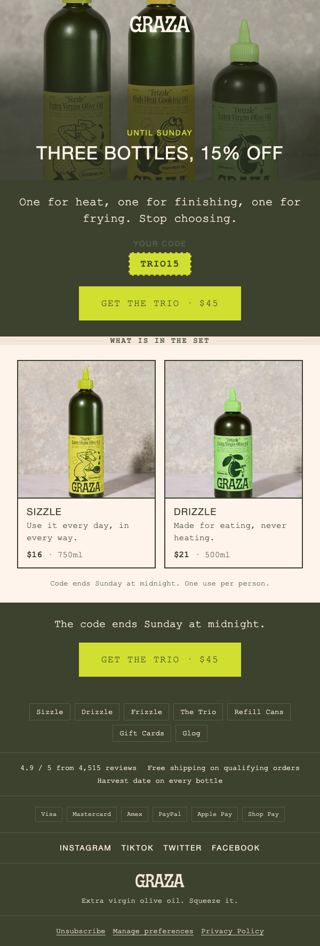
Não são os flows que mantêm a tua lista engajada e a gostar de abrir os teus emails. As campanhas é que têm de fazer esse papel: manter a lista activa, manter-te no topo da mente, e cobrir uma mistura de tipos de conteúdo — não só promoções.
A cadência: 3 a 4 por semana
Ao contrário do que a maioria pensa, três a quatro campanhas por semana é o ideal. Faz as contas: uma pessoa subscreve 20 a 30 newsletters e recebe cerca de 121 emails por dia — 847 por semana. Se enviares um email por semana, és 0,00118% do que ela recebe.
E é exactamente aqui que a pipeline deste guia paga sozinha. A razão pela qual quase ninguém envia 3-4 por semana nunca foi estratégia — foi o custo de produzir cada email.
O calendário do mês, em três passos
- Datas e eventos-chave
Antes de escrever copy: vai haver lançamento de produto ou bundle? Algum esgotado volta a stock? Há feriados relevantes para alavancar? - A BIG CAMPAIGN do mês
A tua maior alavanca. Oferta agressiva, maior que a de entrada (se a entrada é 15%, aqui dás 20%+). Frequência elevada. Duração de 2 a 12 dias. Uma vez por mês. - Preenche com campanhas de suporte
Text-based do fundador (uma para non-buyers, uma para 1x buyers) e não promocionais — educar, entreter, engajar.
Estás no design system desta marca. Constrói-me o calendário de campanhas de [MÊS/ANO] para esta marca. Contexto que te dou: - Lançamentos ou restocks previstos: [...] - Feriados/datas relevantes no meu mercado: [...] - Oferta de entrada actual (a do pop-up): [...] Regras: - 3 a 4 campanhas por semana. - UMA big campaign no mês, com oferta maior que a de entrada, 2 a 12 dias, com teaser + launch + reminders + last chance. - Pelo menos 1 campanha por mês só para NON BUYERS. - Pelo menos 1 campanha por mês só para quem já comprou 1 vez. - Alterna: educativa, engajamento, lançamento/restock, entretenimento. - Não mais de 2 campanhas promocionais seguidas. Devolve uma tabela com: data | tipo (🔴 venda / 🟢 educativa / 🟡 engajamento / 🔵 lançamento) | segmento | assunto | a ideia do email em 2 linhas. No fim diz-me qual é a campanha do mês em que devo pôr mais esforço, e porquê.
Espremer uma campanha promocional
A maioria das marcas envia dois emails, faz umas vendas e pára. Esse pico inicial é só uma amostra do que é possível. O sistema para multiplicar 2 a 5 vezes a faturação de cada campanha tem quatro fases.
- [TEASER] — 1 a 2 dias antes
O objectivo não é vender, é entrar no radar. "Marca no calendário", "algo grande vem aí". Posiciona a sale como rara. Um SMS aqui tem ROI absurdo. - [LAUNCH] — dia 1, manhã
É onde a maioria compra. Email visual com o desconto no topo, headline directa ("POUPA 25% EM TODO O SITE"), CTA grande above the fold. Nada de metáforas — confusão mata vendas. À tarde, opcional: plain text do fundador. - [REMINDERS] — todos os dias
Consistência com variedade. Alterna emails directos (foco na promoção, urgência) com emails de conteúdo (valor útil + banner discreto da sale). Nem todos abrem o primeiro nem o segundo. - [LAST CHANCE] — último dia
Normalmente gera mais vendas que o primeiro. Manhã: visual com contador. Tarde: plain text do fundador, simples e urgente. SMS no último dia.
Segmenta campanhas só para non buyers — podes usar copy muito mais agressiva sem risco · nos dias 1 e último considera enviar para a lista completa · plain text funciona muito bem para urgência · mostra preços riscados, tornam a oferta real.
Estás no design system desta marca. Segue as regras de design que lá estão. Desenha-me a campanha promocional completa para: [OCASIÃO] Oferta: [X]% off / [X]€ off em [âmbito] Duração: [N] dias Começa a: [data] Estrutura obrigatória: TEASER (1-2 dias antes) -> LAUNCH (dia 1) -> REMINDERS (1/dia) -> LAST CHANCE (último dia, manhã e tarde). Antes de desenhar, dá-me: 1. O conceito criativo da campanha — o fio que liga todos os emails. Não quero "20% off" repetido em cinco layouts. Quero um tema. 2. A grelha: dia | hora | tipo | segmento | assunto | ângulo. Regras: - Cada reminder muda o ÂNGULO, mantendo o mesmo branding e energia. - Alterna directos com emails de conteúdo (valor + lembrete discreto). - Os text-based do fundador entram no dia 1 à tarde e no último dia à tarde. - Dá-me 2 SMS: um para o teaser, um para o último dia. Máximo 160 caracteres. Só depois de eu aprovar o conceito é que desenhas os emails, um a um.
As duas formas de fazer uma promoção
| "Estamos com 20% off em tudo!" | "O email de hoje é sobre X (e btw, 20% off)" | |
|---|---|---|
| Exemplo | Dr. Squatch | Hostage Tape |
| O herói é | O desconto | O conteúdo |
| Usa quando | Fazes 1 grande desconto por mês. Se é raro, tem de parecer raro. | Descontas com frequência, ou a audiência é madura e resiste a promoções. |
Não há uma melhor. Depende do teu posicionamento e da frequência com que descontas. Dito isto: a primeira é a que eu aplico na maioria dos clientes.
Branding adaptado à ocasião — amarelo e preto, ícones de alerta, fitas de "cuidado", luvas de construção. Raro ver marcas a fazer isto e é o que transforma uma sale num evento.
Timing — a campanha começa antes do feriado e acaba no dia. Ninguém pensa num feriado depois do feriado.
Oferta em duas fases — pré-sale com brinde para os fãs leais, main sale com descontos directos para os sensíveis ao preço. Duas ondas de receita em vez de uma.
Campanhas não promocionais
A maioria das marcas sabe vender. As que escalam sabem quando não vender. Três blocos: educar (produto, uso, ingredientes, bastidores), entreter (cultura, histórias, falhas, humor) e engajar (responder, votar, participar).
Normaliza enviar campanhas que geram €0. Está tudo bem — estão a construir confiança e a educar. E quando enviares a promoção a seguir, ela vai ter um desempenho muito melhor.
Estás no design system desta marca. Segue as regras de design que lá estão. Desenha uma campanha NÃO promocional do tipo [EDUCATIVA / ENTRETENIMENTO / ENGAJAMENTO] sobre: [tema] - Zero desconto. Zero urgência. Se aparecer a palavra "hoje só", falhaste. - O corpo é um infográfico (regra 4). Escolhe o tipo e justifica. - O CTA não é comprar — é ler, responder, votar ou ver. Excepção: se o tema levar naturalmente a um produto, o link aparece no fim, discreto. - Tem de conseguir ser lido e gostado por alguém que nunca vai comprar. Se o tema que te dei não der um bom email, diz-me e propõe 3 alternativas melhores a partir do design system.
Ângulos que funcionam sempre
| Formato | Ângulos |
|---|---|
| Us vs. Them | Porque nunca faremos [prática do concorrente] · Não cortamos atalhos, eis a prova · Se já experimentaste [concorrente], lê isto |
| Como funciona | O que vem dentro e porque importa · A ciência por trás de [característica] · Como fazemos o teu produto |
| Prova | Cliente do mês · Antes e depois · A razão nº1 por que voltam · Reviews de 5 estrelas que nos fizeram o dia |
| Bastidores | Conhece a equipa · Um dia na [marca] · O nosso processo de embalagem · Porque começámos isto |
| Mitos | Mitos comuns sobre [tema] · X coisas que não sabias sobre [indústria] · Isto devia ser ilegal mas não é |
| Fun | Perguntámos ao ChatGPT o que acha do nosso produto · Print falso de WhatsApp a dar leak de conversas internas · "A vida sem [problema] está a ligar…" |
Onde ir buscar inspiração
Marcas que alternam bem educação, humor e bastidores entre campanhas de venda — todas com arquivo público no Milled:
| Nicho | Marcas |
|---|---|
| Food & drinks | Graza · Magic Spoon · Olipop · Magic Mind · Hydrant · WildWonder · Fly by Jing · Instead of Flowers |
| Personal care | Dr. Squatch · Bubble · LivFresh · Lemme · Bite · Betterbrand · JoyMode · Skull Shaver |
| Fashion | Alp N Rock · Duck Camp · Nixon · Lokai · Linjer |
| Fitness | ARMRA · Kaged · Gains In Bulk · Organics Ocean |
| Home | Who Gives a Crap · The Ridge · Casely |
| Pets | Maev |
Parte 4
A lista
Sem lista não há emails. E a lista é a parte do funil que as marcas mais ignoram, porque estão distraídas com flows bonitos.
| O quê | Alvo | Porquê |
|---|---|---|
| Optin | 10% ou mais | De quem vê o formulário. Abaixo disto, está partido. |
| Primeiro passo | 40 a 50% | Interagem com a pergunta antes de dares o campo do email. |
| Atraso | 5 a 10 segundos | Aparecer logo à entrada rende menos. |
| Onde | Também nas páginas de produto | A maior parte do tráfego não passa pela homepage. |
Pop-ups
A diferença entre um pop-up bom e um mau, numa loja de $50k/mês: ~$8.870/mês.
Dados reais de uma loja a faturar cerca de $50.000/mês, entre 7 de Julho e 14 de Outubro:
Com um pop-up fraco — 2% de inscrição e 4% de conversão — a receita atribuída seria ~$21.285. Diferença: ~$28.683, ou cerca de $8.870/mês, com o mesmo tráfego pago. A uma margem de 30%, são $2.661 no bolso todos os meses, só por causa de um pop-up mal feito.
Os 7 erros que matam a conversão
- Oferta fraca. Ninguém dá o email "só porque sim". ❌ "Subscreve para novidades" ✅ "Ganha um presente surpresa ao inscreveres-te". Sem desconto também funciona: sorteios, guia grátis, acesso antecipado.
- Abre demasiado cedo. Dá 4 a 10 segundos. A pessoa tem de ver algo de interesse primeiro.
- Pedes mais que um campo. Um dado de cada vez. Email primeiro; telefone e nome depois.
- Sem teaser visível. Se fecham e mudam de ideias, perdeste a lead. Mostra sempre um botão discreto para reabrir.
- Oferta mal visível. A proposta de valor tem de ser a primeira coisa que se lê.
- Demasiada informação. Menos é mais. Clareza e bom gosto.
- O mesmo pop-up em desktop e telemóvel. Nunca. Duas versões, sempre.
A oferta
| Tipo | Quando usar |
|---|---|
| € vs. % | AOV abaixo de €100 → percentagem (5–15%). AOV acima de €100 → euros fixos (€15–30). A mesma regra vale nos emails de desconto do carrinho. |
| Desconto mistério | Ideal para descontos baixos (5–15%). Adiciona valor percebido sem mexer na margem. Recomendo vivamente isto em vez de qualquer desconto abaixo de 15% — tem desempenho superior. |
| Oferta grátis na compra | Subscrições ou produtos de AOV elevado. Usa quando já tens um bundle. |
| Portes grátis | Margens apertadas, ou já ofereces acima de um limite. Protege margem. |
| Acesso exclusivo | Lançamentos, edições limitadas. Cresces a lista sem dar desconto. Muito eficaz em moda, tech e marcas com missão. |
O formato
Full page ganha quase sempre. Depois escolhes o tipo:
- O clássico. Oferta na primeira página, inscrição imediata.
- O micro-commit. Pergunta de sim/não ("Queres um desconto?"). Quem diz sim está a dar um microcompromisso e é muito mais provável que complete. Funciona por causa do bias de compromisso: depois de começarmos uma acção, tendemos a acabá-la.
- O quiz. Recolhe zero-party data e permite personalizar emails com base em interesses reais.
- Spin to win e descobre o desconto.
Checklist do pop-up vencedor
- Um dado por etapa
- Delay de 4 a 12 segundos
- Carrega instantaneamente — comprime as imagens
- Cobre pelo menos 75% do ecrã
- Texto o mais conciso possível
- A oferta é o elemento mais importante
- Sem botão "x" — usa um botão "fechar pop-up" por baixo do de submeter
Estás no design system desta marca. Segue as regras de design que lá estão. Desenha-me o pop-up de captura desta marca, em duas versões (desktop e mobile — layouts diferentes, não a mesma coisa redimensionada). Tipo: [CLÁSSICO / MICRO-COMMIT / QUIZ] Oferta: [a do design system, ou a que eu indicar] Regras: - A oferta é a primeira coisa que se lê, em corpo grande. - Um único campo: email. - Cobre pelo menos 75% do ecrã em ambos. - Botão de fechar é texto por baixo do botão principal, não um "x" no canto. - Máximo 20 palavras no total, fora o botão. - Desenha também o TEASER: o botão discreto que fica no canto depois de fechado. Com base no AOV do design system, diz-me se recomendas % ou € fixos — e se o desconto for abaixo de 15%, propõe-me a versão "desconto mistério" em vez disso.
Segmentação
Não compliques. É a regra toda.
Podias segmentar por cor favorita. Até melhorava a conversão. Mas a que custo? Preferes enviar 1-2 campanhas hiper-segmentadas para listas de 10.000 pessoas, ou 3-4 campanhas mais amplas para listas de 50.000? A segunda ganha 99 em cada 100 vezes.
Listas são estáticas; segmentos são dinâmicos e mudam sozinhos conforme os critérios. Estes são os únicos de que precisas:
| Segmento | Para que serve |
|---|---|
| Engaged 30 / 60 / 90 dias | Com uma boa estratégia, 90% das tuas campanhas vão para os 90-day engaged. |
| Non buyers | Pelo menos 1 campanha por mês, com copy adaptada a levar à primeira compra. Se a abertura deste segmento estiver abaixo de 35%, usa "non buyers engaged nos últimos 90 dias". |
| Buyers | Pelo menos 1 campanha por mês, adaptada a levar à recompra. |
| VIP | Não tem de ser mensal. Ofertas exclusivas de vez em quando. |
| Soft/hard bounces | Suprime mensalmente, uns dias antes do fim do ciclo de faturação — limpas a lista e poupas no Klaviyo. Boa higiene = mais emails na inbox = mais faturação. |
Entregabilidade
Como nunca mais ir para o spam.
Entregabilidade é o score de crédito do teu domínio. Bom score → aba Principal. Mau score → Spam. No meio → Promoções. Pensa como o Google: se 2 em cada 10 pessoas abrem os teus emails, porque haveria o Gmail de continuar a pô-los na inbox principal?
Assumindo que a parte técnica está bem configurada, há duas razões para o open rate estar baixo: os teus emails são fracos e ninguém os quer abrir, ou a tua reputação está em baixo. Se estás abaixo de 40% de abertura, é provável que estejas a cair em Promoções ou Spam.
Como reativar uma lista morta
- Verifica a reputação
Vai a glockapps.com e segue as instruções. Objectivo: 75%+ de entrega na inbox. - Recupera com segmentos engaged
Cria 4 a 5 segmentos por engagement e envia por ordem, sem saltar etapas. Quanto pior a reputação, mais pequeno o segmento inicial.
| Segmento | Critério | Passa ao seguinte quando |
|---|---|---|
| 7 dias engaged | Abriu ou clicou nos últimos 7 dias | Open rate > 45% |
| 14 dias engaged | Últimos 14 dias | Open rate > 45% |
| 30 dias engaged | Últimos 30 dias | Open rate > 45% |
| 60 dias engaged | Últimos 60 dias | Open rate > 45% |
| 90 dias engaged | Últimos 90 dias | — |
Se fores consistente, em quatro semanas já podes estar a enviar para o segmento de 90 dias com 50%+ de abertura.
Emails plain text. Escritos como se fossem para um colega — sem imagem, header ou footer. Melhoram a entregabilidade de forma directa.
Aumenta a cadência. Um email por semana não chega. Para reativar uma lista em 30 dias, envia 3 a 4 por semana. Sim, mais emails melhoram a reputação — desde que sejam para segmentos engaged.
Estás no design system desta marca. Escreve-me 8 emails PLAIN TEXT para reactivar a lista ao longo de 4 semanas, enviados aos segmentos engaged por ordem crescente (7 -> 14 -> 30 -> 60 -> 90). Regras: - Todos text-based. Sem header, sem footer, sem imagens, sem botões. - Máximo 100 palavras cada. - Cada um trata de UM assunto e pede UMA acção — e pelo menos metade das acções são responder, não comprar. Respostas melhoram a reputação. - Nada de "sentimos a tua falta" nem de "ainda estás aí?". Isso lê-se como email automático e é exactamente o que estamos a tentar evitar. - Voz do fundador, do design system. Devolve tabela: nº | segmento | assunto | preview text | corpo.
Parte 5
Medir
O setup inicial nunca está perfeito. Mesmo com este guia.
| Métrica | Alvo | O que diz |
|---|---|---|
| Open rate | 40% ou mais | Abaixo disto é reputação, não copy. |
| Optin do pop-up | 10% ou mais | A maior alavanca de crescimento da lista. |
| Campanhas/semana | 3 a 4 | Para a lista engaged, não para segmentos de 20 mil. |
| Cancelamentos | a vigiar em Novembro | Quando a cadência triplica, é esta a métrica que avisa. |
KPIs — o que deves estar a atingir
| Abertura | Cliques | Compras | |
|---|---|---|---|
| Welcome email 1 | 60%+ | 12%+ | 8%+ |
| Restantes emails de welcome | 35%+ | 2%+ | 0,5%+ |
| Post-purchase | 80–85% | — | — |
| Campanhas | 20–25% | — | — |
É normal a abertura ir descendo ao longo de um flow. O que não é normal é o email 1 estar abaixo de 60%.
A/B tests
Muita gente pensa que os flows se criam uma vez e nunca mais se mexem. É exactamente o oposto. Cada melhoria na conversão compensa a queda de desempenho dos anúncios — que é o que acontece sempre que aumentas o investimento em tráfego pago.
As regras
- Uma variável de cada vez. Sempre.
- Hipótese clara: "acredito que [alteração] vai melhorar [métrica] porque [motivo]".
- Mínimo de 2.000 visualizações por variante antes de declarar vencedor.
- Procura 15%+ de melhoria para chamares significância.
O que testar, por ordem de impacto
| Onde | Variável | O que experimentar |
|---|---|---|
| Flows | A oferta | Provavelmente o maior impacto. Mas olha para as três coisas ao mesmo tempo: taxa de subscrição, conversão do flow, e faturação atribuída. Podes ter uma oferta que converte melhor com menos subscrições e menos faturação total — nesse caso não é melhor. |
| Subject / preview | Curiosidade vs. urgência vs. segurança | |
| Design vs. text-based | Alguns nichos respondem muito bem a text-based. Temos visto bons resultados no 2º e no 7º email do welcome. | |
| Produtos vs. categorias | Mostrar categorias em vez de produtos específicos. Compara CTR e conversão. | |
| Timing | Delays de flow | 30 min vs. 60 min no 1º email de carrinho. 24h vs. 48h no 2º. |
| Hora de envio | Manhã vs. tarde vs. noite | |
| Pop-up | Delay | Entre 4 e 12 segundos. Optimiza para número total de submits, não para submit rate — um delay de 30s tem melhor rate porque menos pessoas o vêem. |
| Foto | Conteúdos diferentes; ao lado do formulário vs. como fundo | |
| Teaser | Cor, copy, posição, imagem vs. texto |
Estás no design system desta marca. Segue as regras de design que lá estão. Aqui está o meu email actual (variante A): [cola o HTML ou descreve] Quero testar UMA variável: [oferta / subject line / design vs text / produtos vs categorias / posição do CTA] Dá-me: 1. A hipótese, na forma "acredito que X vai melhorar Y porque Z". 2. A variante B, mudando SÓ essa variável. Tudo o resto fica idêntico — se mudares mais alguma coisa, o teste não vale nada. 3. Que métrica devo olhar, e a partir de quantos envios posso decidir. Se achares que esta variável não é a de maior impacto neste email, diz-me qual testarias primeiro e porquê.
A táctica que recomendo sempre e que quase ninguém faz: 24h depois, reenvia o primeiro email do welcome flow a quem não o abriu. Muda ligeiramente a subject line e o preview text; mantém o conteúdo igual. É o email que mais converte de toda a tua operação — queres garantir que o máximo de gente o vê.
O que enviar quando não há nada a anunciar
As 20 campanhas
Um flow escreve-se uma vez. Uma campanha escreve-se todas as semanas, para sempre — e a pergunta difícil nunca é como escrever, é sobre o quê.
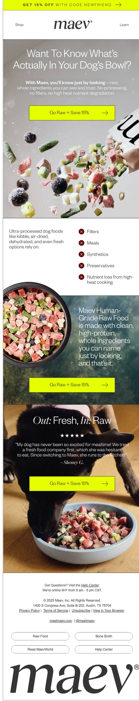
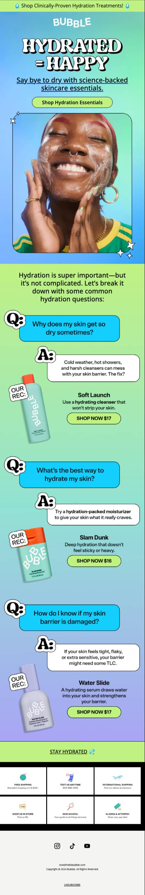
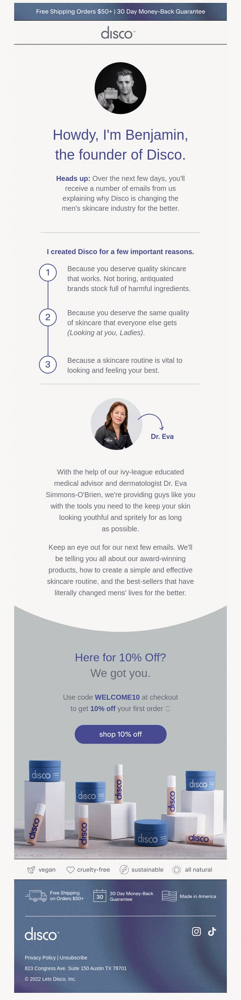
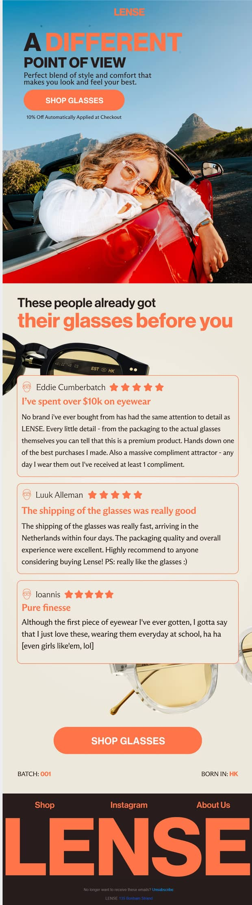
Estas vinte não são uma lista de ideias: são frameworks nomeados, cada um com uma estrutura própria e um trabalho que só ele faz. Vêm da mesma biblioteca que sustenta o resto deste guia.
Primeiro, os quatro tipos
Antes de escolher um framework, é preciso saber que tipo de email é. É a etiqueta que vai no calendário, e é ela que impede o mês inteiro de ser vendas.
Vende directamente. Tem oferta, prazo, ou as duas coisas.
3 dos 20Ensina alguma coisa e posiciona o produto como consequência.
9 dos 20Existe para ter cliques, respostas e atenção. Muitas vezes sem vender nada.
3 dos 20A palavra de quem comprou, e o que a empresa é por dentro.
5 dos 20"Us vs Them" não é uma campanha de vendas. É de posicionamento, e vive em Educational. Não leva desconto, não leva urgência e não fecha com "compra agora" — se lhe puseres uma oferta em cima, deixa de ser uma comparação e passa a ser publicidade, e as pessoas lêem-na como tal.
É diferente de um lançamento, que é Sales puro: tem data, tem produto novo, e existe para vender no dia. Trocar um pelo outro no calendário parece um detalhe e não é: muda quem recebe, muda a métrica que se olha, e muda o resultado.
E as sete categorias do calendário
Os tipos dizem o que o email faz. As categorias dizem de onde vem a ideia — e um calendário bom puxa das sete:
- Promos / ofertas especiais
- Feriados e datas
- Lançamentos de produto
- Destaque de produto
- Prova social
- Emails de valor (educação)
- Novidades da empresa
Por cada mês, e para uma marca a enviar três a quatro vezes por semana:
1 a 2 promocionais · 4 a 6 de produto · 4 a 6 de valor ou educação · 2 a 4 de prova social · 2 a 4 de marca.
Se mais de um terço do calendário for promocional, tira emails de lá. E a regra semanal que quase toda a gente falha: dois emails seguidos nunca são do mesmo tipo. Se segunda foi um testemunho, quarta não pode ser outra prova social — mesmo que o mês inteiro esteja equilibrado, a semana lê-se como um padrão e as aberturas caem.
Uma última, sobre promoções a sério: no máximo um evento de vendas por mês, e de dois em dois meses é melhor. Quando são frequentes, a lista aprende a esperar — e a paciência dela custa-te a margem.
Estás no design system desta marca. Não quero um email. Quero a CAMPANHA INTEIRA à volta de [MOMENTO]. Devolve-me primeiro o plano, e só depois desenhas: - Quantos emails, e o papel de cada um: um anúncio, um ou dois de meio com ângulos diferentes, e um de fecho. - A data e a hora de cada um. - O TIPO de cada um (sales / educational / engagement / prova / marca) e o framework que usa. - A quem vai: lista inteira, ou só quem não abriu o anterior. - O assunto e o preview text de cada um. - O que MUDA de email para email. Se a resposta for "o assunto", não é uma campanha, é o mesmo email três vezes. Regra: dois emails seguidos não podem ser do mesmo tipo. Espera que eu aprove o plano. Depois desenha-os por ordem.
One Benefit
Um só benefício, e mais nenhum no email inteiro.
educationalEstás no design system desta marca. Segue as regras que lá estão. Desenha uma campanha de UM SÓ BENEFÍCIO. - Escolhe o benefício nº1 e não menciones mais nenhum. Nem portes grátis, nem a gama, nem prémios. - Uma pergunta antes de escreveres: qual é a ÚNICA coisa que quero que fique na cabeça de quem lê? Se houver duas, faz dois emails. - O objectivo é cimentar esse benefício na memória, associado a nós. - Se te apetecer acrescentar um segundo, isso significa que o primeiro está mal escrito.
One Feature
Uma característica só, tratada como notícia.
educationalEstás no design system desta marca. Segue as regras que lá estão.
Desenha uma campanha de UMA CARACTERÍSTICA.
- Uma característica concreta e verificável do produto. Material,
processo, medida, componente.
- Abre com ela como se fosse uma pergunta que alguém fez.
("Alguém disse bambu?")
- Diz o que essa característica FAZ por quem compra. Uma
característica sem consequência é trivia.
- Uma fotografia macro. Isto vive de mostrar.
FAQ
Uma pergunta frequente. Uma só.
educationalEstás no design system desta marca. Segue as regras que lá estão. Desenha uma campanha de FAQ. - UMA pergunta, a que mais recebem. Não uma lista de cinco. - Escreve a pergunta como as pessoas a fazem, não como o apoio ao cliente a reformula. - Resposta directa nas primeiras três linhas. O contexto vem depois. - Se a resposta expõe uma limitação do produto, diz-a. É aí que este email ganha confiança.
What's Inside
O que vem na caixa.
educationalEstás no design system desta marca. Segue as regras que lá estão. Desenha uma campanha de O QUE VEM NA CAIXA. - Desembrulha a encomenda: produto, acessórios, embalagem, extras. - Cada item com uma linha do porquê de existir. - Fotografia do conjunto, e depois de cada peça. - Isto responde a uma ansiedade real de quem nunca comprou: não saber exactamente o que recebe pelo dinheiro.
How It's Made
O processo, mostrado.
educationalEstás no design system desta marca. Segue as regras que lá estão. Desenha uma campanha de COMO É FEITO. - Só vale se o processo for mesmo diferente. Se for igual ao de toda a gente, escolhe outro framework. - Três a quatro passos, por ordem, com fotografia de cada um. - Um número em cada passo: horas, temperatura, quilos, quantas mãos. - O produto acabado no fim, e o preço. Quem viu o trabalho aceita melhor o preço.
How To Use
Como se usa, num caso concreto.
educationalEstás no design system desta marca. Segue as regras que lá estão. Desenha uma campanha de COMO SE USA. - Um caso concreto: um prato, um ritual, uma rotina. Não cinco dicas. - Três passos numerados. Se precisa de seis, escolhe outro caso. - O produto aparece a fazer trabalho real em pelo menos dois passos. - O segundo produto, se entrar, entra porque o caso precisa dele — nunca porque queremos vender dois.
Back In Stock
Voltou. Ou chegou mais.
salesEstás no design system desta marca. Segue as regras que lá estão. Desenha uma campanha de VOLTOU AO STOCK. - A notícia é a primeira linha. Sem "temos novidades". - Quanto tempo esteve fora e porquê, numa frase. Escassez explicada é credível; escassez afirmada não é. - Quanto stock há, se souberes. Se não souberes, não inventes. - Serve mesmo quando só chegou mais mercadoria: o ângulo de "voltou" funciona à mesma.
Trending
O que está a sair mais depressa.
salesEstás no design system desta marca. Segue as regras que lá estão. Desenha uma campanha de PRODUTO EM ALTA. - Um produto, não uma lista. "Este está a voar." - Um número que sustente: quantos saíram, em quanto tempo, ou a posição no catálogo. - Prova social recente, dos últimos dias, não de sempre. - Urgência que vem do facto, não da linguagem. Se não tens o facto, não uses este framework.
Testimonials
A palavra de quem comprou.
social proofEstás no design system desta marca. Segue as regras que lá estão. Desenha uma campanha de TESTEMUNHOS. - Escolhe reviews que comecem por uma dúvida e acabem convencidas. A objecção dentro do testemunho vale mais do que o elogio. - Cita à letra. Não corrijas a gramática, não cortes a meio. - Nome e marca de verificado. Sem nome, não uses. - Um produto só, o mesmo que as pessoas citadas compraram. - Se não tens reviews assim, diz-mo. Não inventes uma.
Us vs Them
Posicionamento contra a alternativa.
educationalEstás no design system desta marca. Segue as regras que lá estão.
Desenha uma campanha de NÓS CONTRA ELES.
Isto NÃO é uma campanha de venda: é de posicionamento. Não leva
desconto, não leva urgência, e não fecha com "compra agora".
- Escolhe UMA alternativa e explica o que nos separa. Pode ser um
concorrente ou a categoria inteira ("a maioria das marcas").
- Tabela: 4 a 5 linhas, benefícios e não características.
- Uma linha a admitir o que a alternativa faz bem. Uma comparação
que só nos elogia lê-se como publicidade e perde-se.
- Cada linha responde a uma objecção real, não a uma vaidade nossa.
Myths vs Facts
O que toda a gente acredita e é falso.
educationalEstás no design system desta marca. Segue as regras que lá estão. Desenha uma campanha de MITO CONTRA FACTO. - Enuncia o mito tal como as pessoas o dizem, sem ironia. - Desmonta-o com um facto verificável, não com a nossa opinião. - Diz porque é que o mito existe. A origem torna-o perdoável e quem acreditou não se sente estúpido. - Uma consequência prática: o que muda na próxima compra. - Vende no fim em duas linhas, ou não vendas de todo.
Blog Promo
Levar um conteúdo que já existe.
engagementEstás no design system desta marca. Segue as regras que lá estão. Desenha uma campanha que leva a um ARTIGO. - O email não resume o artigo: dá-lhe o melhor pedaço e pára. - Um dado ou uma frase do artigo que valha por si só. - Um link, um destino. Nada de "e também temos". - Se o artigo não existe, escreve o email na mesma e publica-o depois — o email é que faz o trabalho.
Research Study
Um estudo, uma investigação, um número de fora.
educationalEstás no design system desta marca. Segue as regras que lá estão. Desenha uma campanha à volta de um ESTUDO. - Uma fonte externa e citável. Diz quem, quando e com quantas pessoas. Sem fonte, isto não se envia. - O número em grande, e só um. - Liga o estudo ao problema que o produto resolve. Sem forçar: se a ligação for esticada, o email perde a credibilidade que o estudo trazia. - Não digas que o estudo é sobre nós se não for.
Holiday
Uma data, mesmo que estranha.
engagementEstás no design system desta marca. Segue as regras que lá estão. Desenha uma campanha de DATA / FERIADO. - Serve tanto o Natal como o Dia Nacional do que quer que seja ligado ao nicho. As datas estranhas costumam render mais, porque ninguém está a competir por elas. - A data tem de ter ligação genuína à marca. Uma data à toa lê-se a desespero por um pretexto. - Uma piada, se a marca a souber contar. - Oferta opcional. Muitas destas funcionam melhor sem nenhuma.
Progress Update
O que mudou na empresa.
companyEstás no design system desta marca. Segue as regras que lá estão. Desenha uma campanha de ACTUALIZAÇÃO DA EMPRESA. - Um marco concreto: patente, certificação, fábrica nova, país novo, número redondo de clientes. - Diz o que isso muda para quem compra. Um marco sem consequência é vaidade. - Agradece à lista, sem melodrama. - Sem venda. O CTA é opcional e pequeno.
Customer Transformation
Uma pessoa, antes e depois de nós.
social proofEstás no design system desta marca. Segue as regras que lá estão. Desenha uma campanha de TRANSFORMAÇÃO DE UM CLIENTE. - Uma pessoa, com nome. O ponto de partida, o que mudou, quanto tempo levou. - O produto entra como ferramenta, não como herói. - Fotografia real da pessoa ou do resultado. Sem imagem real, isto não passa de uma história inventada. - Números dela, não nossos.
Before vs After
A prova visual, lado a lado.
social proofEstás no design system desta marca. Segue as regras que lá estão. Desenha uma campanha de ANTES E DEPOIS. - Duas imagens, mesmo enquadramento, mesma luz. Se o enquadramento muda, a prova evapora-se. - Uma legenda em cada, com o tempo decorrido. - Uma linha a dizer o que NÃO mudou — é o que torna o resto credível. - Se o resultado depende de uso continuado, di-lo. Um antes/depois que promete de mais gera devoluções.
Puzzles / Riddles
Um jogo. Existe para ter cliques e respostas.
engagementEstás no design system desta marca. Segue as regras que lá estão. Desenha uma campanha de JOGO. - Um enigma, um "adivinha o produto" a partir de uma macro, um "duas verdades e uma mentira" sobre a marca. - A resposta vem no email seguinte, e diz isso explicitamente. - Fácil de jogar em cinco segundos. Se obriga a pensar, ninguém joga. - Sem venda nenhuma. Este email compra-te atenção para o próximo.
Note From The Founder
Texto simples, de uma pessoa.
companyEstás no design system desta marca. Segue as regras que lá estão. Escreve uma campanha em TEXTO do fundador. Sem cabeçalho, sem imagens, sem botão desenhado, sem rodapé de design. Tem de parecer escrito à pressa por uma pessoa real. - Máximo 150 palavras. - Uma ideia só, e uma que valesse a pena partilhar mesmo sem vender. - Um link de texto no fim, quase como PS. - Assinatura com o primeiro nome. - Nem uma palavra de marketing.
Gift Guide
Para quem compra para outra pessoa.
salesEstás no design system desta marca. Segue as regras que lá estão. Desenha uma campanha de GUIA DE PRESENTES. - Fala com quem OFERECE, não com quem usa. São pessoas diferentes, e quem oferece tem medo de errar. - Organiza por destinatário, nunca por produto: "para quem começa", "para quem já tem tudo", "para quem cozinha". - A data limite para chegar a tempo é a informação mais útil do email inteiro. Põe-na em destaque. - Cartão-presente no fim, como saída de emergência. - Se embrulham ou levam mensagem, diz.
Vinte frameworks não são vinte emails — são vinte formas. O que os multiplica são os micro-tópicos: sub-assuntos pequenos do teu nicho, do teu processo e do teu produto.
Cada email trata de um. Uma pergunta antes de escreveres: qual é a única coisa que quero que fique na cabeça de quem lê? Se houver duas, são dois emails. Um email é olhado durante três a cinco segundos — com dois assuntos, nenhum passa.
Novembro e Dezembro
Black Friday
É o mês que paga o ano. E o erro que quase toda a gente comete é tratá-lo como um dia.
Isto não é teoria. São seis planos de Q4 reais — calçado vegan, meias, moda, mercearia, têxtil-lar e calçado — cada um com o seu produto, mercado e margem. Postos lado a lado mostram o que varia, e o que nunca varia.
Seis marcas, seis ofertas, a mesma estrutura
As ofertas não podiam ser mais diferentes umas das outras. A estrutura é a mesma nas seis: cinco fases, sempre pela mesma ordem.
| Marca | Early Access | Black Friday | Cyber Monday | Presentes |
|---|---|---|---|---|
| Calçado vegan | 29 Out–1 Nov escalões c/ cupão |
$50→15% · $100→25% $200→35% · $500→45% |
escalões + boné grátis 24h >$100 |
5–11 Dez +25% em conjuntos |
| Meias | 6–24 Nov até 50%, sem cupão |
até 70% sem cupão |
extra 10% código CYBER10 |
2–21 Dez 5 pares → portes grátis |
| Moda | 13–24 Nov €25 de crédito >€80 |
€50→10% · €100→20% €200→30% · €300→40% |
escalões + portes grátis 72h |
5–21 Dez conjuntos com desconto |
| Mercearia | 13–24 Nov até 50% |
até 70% | extra 10% código CYBER10 |
5–21 Dez até 65% em vinho e bacalhau |
| Têxtil-lar | 13 Nov: A/B da oferta crédito vs brinde |
até 40% por escalões |
escalões + portes grátis 72h |
5–11 Dez conjuntos 20–25% |
| Calçado | 15 Nov palmilha grátis por par |
€50→10% · €100→20% €200→30% · €300→40% |
escalões + brindes surpresa |
— |
1 · Early Access — oferta própria, só para o segmento engaged. Não é a promoção adiantada: é outra, mais pequena.
2 · Black Friday — a oferta principal, a melhor do ano, simples de perceber.
3 · Cyber Monday — mecânica nova, não mais desconto. Apanha quem falhou.
4 · Presentes — discurso novo: fala com quem oferece. Vai até 21 de Dezembro.
5 · Cartão-presente — 23 e 24. Para quem se lembrou tarde.
Quantos emails são, a sério
Entre 42 e 53 emails em dois meses, conforme a marca. Novembro entre 23 e 31; Dezembro entre 19 e 22. É três a quatro vezes a cadência normal, e é o esperado — a métrica a vigiar deixa de ser a abertura e passa a ser a taxa de cancelamento.
Novembro, dia a dia
Este é o calendário real de uma das seis. Repara no que abre o mês: seis emails que não vendem nada, de dois em dois dias, antes de a promoção sequer existir.
Dezembro, dia a dia
E o mês que quase toda a gente desperdiça. Repara nos dias 14–15 e 20–21: são os limites de envio para chegar ao Natal, transformados em campanhas de portes grátis. E no fim, três emails que não vendem nada.
Nos dias 28, 29 e 30 de Novembro, o plano manda três emails por dia. Não são o mesmo email repetido: cada um vai a quem não abriu o anterior, com outro assunto, outra imagem de topo, e muitas vezes noutro formato — um desenhado, um em texto.
Fora da Black Friday isto queimava a lista. Dentro dela, quem manda um email por dia está a deixar dinheiro em cima da mesa enquanto a concorrência manda três.
O que as seis fizeram igual
- Nenhuma começou na sexta-feira
A mais tardia abriu a 13 de Novembro; a mais cedo a 29 de Outubro. Quem só aparece na semana da Black Friday compra atenção no momento em que ela é mais cara. - Todas aqueceram a lista antes
Uma a duas semanas de emails que não vendem nada, de dois em dois dias. É a fase que toda a gente salta, e é o que faz a lista chegar a Novembro ainda a abrir emails. - Todas fizeram Early Access com oferta própria
Crédito na conta, brinde, ou desconto menor. Vende antes do ruído e diz ao segmento fiel que ele é fiel. - O Cyber Monday nunca foi só mais desconto
Um código extra, portes grátis com prazo, um brinde. Uma mecânica nova — é isso que o torna notícia em vez de repetição. - Nenhuma parou a 1 de Dezembro
A fase de presentes é metade do plano e fala com outra pessoa: quem oferece, não quem usa. - Os prazos de envio viraram campanhas
14–15 para envio normal, 20–21 para expresso. Quatro das seis transformaram o limite logístico numa promoção de portes grátis. É urgência que não custa margem e é verdadeira. - Dezembro fecha sem vender
Natal em texto do fundador, balanço do ano, passagem de ano. Três emails que não pedem nada, no mês em que toda a gente só pede.
A meio de Novembro, uma das marcas substituiu todos os flows por versões de Black Friday: welcome, site abandon, browse, cart, checkout e pós-compra, todos reescritos com a oferta da campanha lá dentro.
Durante cinco semanas, toda a gente que entra na lista ou abandona um carrinho recebe automaticamente a promoção, sem ninguém tocar numa campanha. Os flows são o tráfego que já lá está — e na única altura do ano em que a oferta é boa, quase toda a gente os deixa a dizer o mesmo de sempre.
É trabalho de um dia, e é o maior ganho desta página inteira.
1 · O desconto carrega-se primeiro, o email sai depois. Nos planos, os descontos entram no site às 7h e os emails saem depois. Um email de promoção que chega a uma loja a preço normal é o pior erro possível do mês.
2 · O banner diz sempre "Black Friday" e só depois o momento. "Last Days" sozinho não diz a ninguém do que se trata.
3 · Escolhe a mecânica pela margem, não pela coragem. Escalões por valor de carrinho sobem o valor médio da encomenda em vez de queimarem margem em toda a gente. Desconto plano é mais fácil de gritar. Brinde não toca no preço. As três funcionam — a errada é a que não escolheste de propósito.
4 · Testa a oferta antes de a anunciares. Uma das seis correu um A/B entre duas mecânicas a um segmento pequeno, dez dias antes, e lançou com a vencedora. É a coisa mais barata desta página.
5 · A hora do fim é uma promessa. Estender depois de anunciar o fim custa-te o direito de usar urgência durante um ano.
Estás no design system desta marca. Planeia-me a Black Friday inteira, em três fases com desconto a subir: fase 1 de [DATA] a [DATA] com [X]%, fase 2 de [DATA] a [DATA] com [Y]%, e Cyber Monday a [DATA] com uma mecânica nova (código extra, não só mais desconto). Devolve-me primeiro o CALENDÁRIO, e espera que eu aprove: - data, hora e fase de cada envio - a quem vai: lista inteira, ou só quem não abriu o anterior - o ângulo de cada um em cinco palavras — e se dois ângulos se repetirem, corta um dos emails - onde entra o email que NÃO vende - quais são só de texto Regras que não se negoceiam: - o primeiro email de cada fase vai à lista inteira - os últimos três dias levam dois envios, e o segundo do dia vai só a quem não abriu o primeiro, com outro assunto e outra imagem - o último email do último dia é texto simples - o fim tem hora, e a hora cumpre-se Depois de eu aprovar, desenha-os por ordem.
Estás no design system desta marca. Desenha o email de LANÇAMENTO da Black Friday. - Este é o email mais barulhento do ano, e é o único em que isso está certo. Toda a gente está a gritar; tem de se ouvir o nosso. - Above the fold: o desconto em número grande, o prazo, e o botão. Nada de história de marca, nada de "temos o prazer de". - Uma imagem de topo que seja diferente de tudo o que mandaste este ano. A caixa de entrada está cheia de emails iguais. - Três a cinco produtos, os que têm o maior desconto real. - Diz o que NÃO está incluído, se houver excepções. Descobrir uma excepção no checkout é como se perde um cliente em Novembro. - Curto. Este email não convence ninguém: só anuncia.
Campanhas
As cinco que se fazem primeiro
Um mês de campanhas não são vinte peças. São três desenhadas e duas de texto — e as de texto costumam ser as que mais respostas trazem.
A tentação é fazer só a promocional, porque é a que se vê a vender. Mas uma lista que só recebe descontos aprende a esperar pelo desconto, e a promocional seguinte tem de ser maior para funcionar igual. As outras quatro existem para que a promocional continue a valer alguma coisa.
Campanha 1 Nova colheita — sem oferta nenhuma
O contrário de uma promoção: notícia. A razão para abrir é a data no rótulo ter mudado, e o email fecha a dizer explicitamente que não há desconto. É a campanha que mantém a lista habituada a abrir por outra coisa que não dinheiro.
Campanha 2 A receita — educativa
Vende sem vender: um prato, três passos, e o produto a fazer o trabalho. O upsell aparece no fim como consequência da receita, não como pedido.
Campanha 3 A promocional
Uma oferta, um prazo, o código nos primeiros 600px. É a única das cinco com desconto, e é isso que a torna eficaz.
Campanha 4 A objecção, em texto
A pergunta que a lista faz em silêncio — porque custa isto o que custa — respondida a direito, sem design e sem oferta. Ganha confiança precisamente por não pedir nada.
Campanha 5 Uma pergunta
Existe para ter respostas. Cada resposta ensina ao Gmail que as tuas mensagens são queridas, e isso vale mais do que a campanha em si. É a coisa mais barata que podes fazer pela entregabilidade.
Num mês normal: uma promocional, e três ou quatro que não vendem nada directamente. Se inverteres isto, a lista deixa de abrir e a culpa vai parecer ser do assunto do email.
Tudo de uma vez
Os 23 emails
Cinco flows e cinco campanhas, à escala a que se vê o que é uma marca e o que é uma colecção de emails soltos.
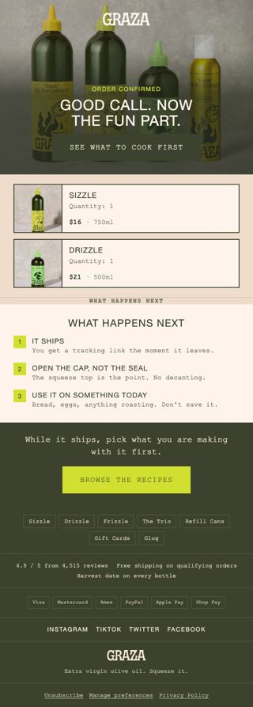
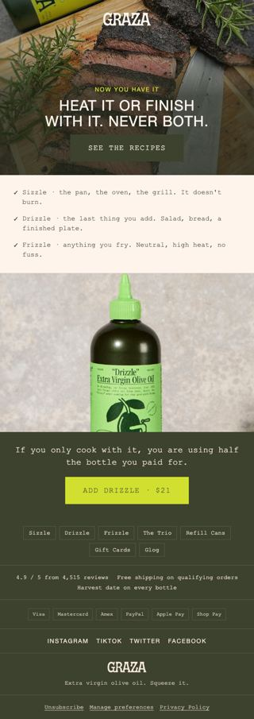
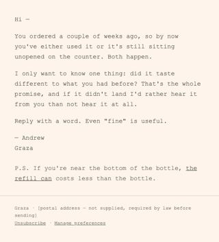
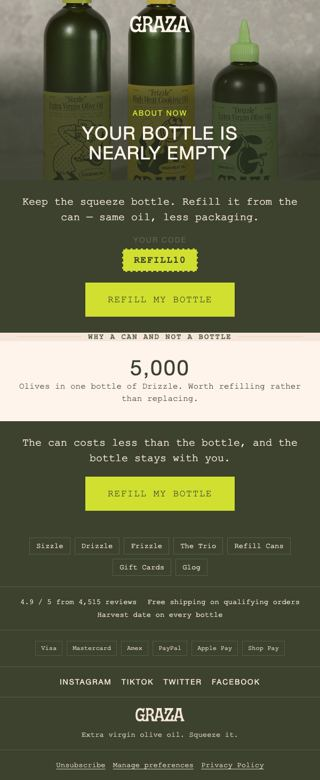
Carrega em qualquer um para o abrir inteiro. Todos abrem com fotografia, todos têm o wordmark fixo no topo, todos têm um CTA dentro dos primeiros 600px. Os cinco de texto não têm design nenhum — e é isso que os faz funcionar.
Os nossos contra os reais
A única medida honesta de quão perto estás é pôr o teu trabalho ao lado do que a marca a sério manda. Aqui estão os 15 emails mais recentes da Graza, de uma caixa subscrita, entre 22 de Junho e 3 de Agosto de 2026.
A Graza a sério
- Um email a cada 2,8 dias — 15 em 42 dias
- 10 de 15 com emoji no assunto
- 3 de 15 com desconto — e o desconto é 20,74%
- Assuntos em frase falada, com "!!!" e apóstrofos comidos
- Muito bastidores e receita: "Meet Linnea from Marketing"
Os nossos
- Cadência por decidir — o guia propõe menos
- Zero emoji. O brand file proíbe-os explicitamente
- 1 de 5 campanhas com desconto, e é 15% redondo
- Assuntos em frase escrita, mais contidos
- Receita e colheita sim; pessoas da equipa, nenhuma
O brand file dizia "Emoji: não. Nem no assunto, nem no corpo." A marca a sério usa-os em dois terços dos assuntos. A regra não veio da Graza — veio do gosto de quem escreveu o ficheiro, e passou a lei sem ninguém verificar.
É este o valor de comparar: uma regra inventada sobrevive num brand file para sempre, porque nada no processo a confronta com a realidade. Antes de proibires alguma coisa no brand file, vai à caixa de correio ver se a marca a faz.
Mostram gente. Um dos 15 emails apresenta uma pessoa do marketing pelo nome. Nenhum dos 23 gerados tem uma cara — e a foto do fundador continua a ser um [placeholder].
Escolhem números estranhos. 20,74% não é um número de marketing, é uma piada com um número lá dentro. Um "20% off" lê-se como promoção; "20,74%" lê-se como uma marca com sentido de humor.
Quando não há foto
As imagens que a marca não tem
Uma marca a sério tem fotografia. Uma marca nova tem três fotos de produto em fundo branco — e é aí que a geração vale a pena, com um limite que não se ultrapassa.
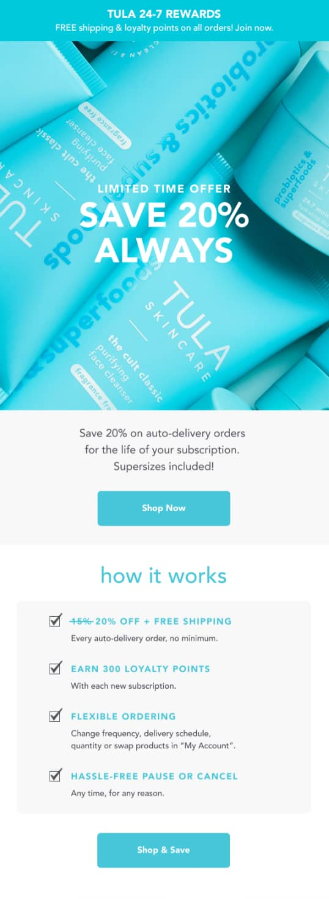
Gera contexto: uma cozinha, uma mesa posta, o produto em uso, uma textura. Nunca pessoas identificáveis, e nunca uma cara a fazer de fundador, cliente ou testemunho. O fundador da marca é uma pessoa real; dar-lhe um rosto gerado é inventar um retrato de alguém que existe, e uma foto gerada com uma legenda de cliente é prova falsa.
Neste guia isso não é teoria: a Graza tem oito fotografias reais no site e é com essas oito que os 23 emails foram feitos. Zero geração. Onde faltava — a foto do fundador — fica um [placeholder] visível, porque um buraco assumido vale mais do que um retrato inventado.
Higgsfield
É o que recomendo. Um provedor só, resultados consistentes, e a obediência ao prompt que é o que interessa num email — não queres arte, queres a garrafa certa em cima da bancada certa.
- Liga-o ao Claude
Nas definições de conectores do claude.ai. Depois disso pedes as imagens na mesma conversa onde desenhas os emails. - Descreve, nunca negues
"Bancada de mármore, luz lateral de manhã, azeite a cair sobre pão" funciona. "Sem pessoas, sem texto" não funciona — o modelo lê o que lá está, não o que não está. - Itera, não acertes à primeira
Duas ou três voltas com uma correcção de cada vez. Mudar tudo ao mesmo tempo dá-te uma imagem diferente, não uma imagem melhor. - Zero texto na imagem
Não peças o nome da marca dentro da foto. Sai sempre mal escrito, e viola a regra de dark mode que sustenta este guia inteiro.
Gera uma fotografia de contexto para um email de marketing desta marca. - [O QUE ESTÁ NA CENA: o produto e o que o rodeia, em objectos concretos] - Luz: [manhã lateral / tarde quente / cozinha com luz de janela] - Superfície: [mármore / madeira usada / aço de restaurante] - Enquadramento: próximo, o produto ocupa cerca de um terço. - Formato: paisagem 16:11, para entrar numa banda de 600px de largura. - Fotografia real de comida, não render 3D, não flat-lay de estúdio. - Sem pessoas. Sem qualquer texto ou logótipo dentro da imagem. Depois de a veres, corrijo UMA coisa de cada vez.
Vai primeiro ao site da marca. Nove em cada dez vezes a fotografia existe e ninguém a foi buscar — as oito da Graza estavam todas no CDN da loja, a um clique. Gerar é o que se faz quando a foto não existe, não quando dá trabalho encontrá-la.
O outro canal
SMS
Não é email mais curto. É um canal com outra permissão, outro custo e outra tolerância — e o erro habitual é mandar por SMS aquilo que já vai por email.
| Quando | Só depois do email estar de pé | O SMS custa por envio; o email não. |
| Onde rende | Carrinho e Black Friday | Momentos com prazo, não conteúdo. |
| Comprimento | Uma frase e um link | Não há assunto nem pré-visualização para segurar contexto. |
Tudo o resto neste guia foi construído e verificado numa conta real. Isto não. O que está aqui é a forma de pensar o canal, não um passo a passo provado. Quando o correr de ponta a ponta, este capítulo passa a ter prompts e prints como os outros.
As três diferenças que mudam tudo
- A permissão é outra, e é mais apertada
Um email consentido não te dá direito a mandar SMS. O número tem de ser recolhido com consentimento explícito para SMS, separado, visível. Isto não é uma boa prática: é lei na maior parte dos mercados, e as multas são reais. - Cada envio custa dinheiro
O email marginal é praticamente grátis; o SMS não. Isso muda a pergunta: deixa de ser "vale a pena mandar?" e passa a ser "vale mais do que custa?". Nunca mandes SMS a uma lista inteira só porque podes. - Chega a um sítio íntimo
O telemóvel não tem separador de promoções. Um SMS a mais custa-te o número, e um número perdido não volta.
Os três momentos onde compensa
Se só fizeres três, faz estes — e nenhum deles repete o email que vai no mesmo momento:
- O código de boas-vindas
Quem dá o número no pop-up recebe o código por SMS em segundos. É o único momento em que a pessoa está mesmo à espera da mensagem. - O carrinho abandonado, uma vez só
Um SMS, entre o primeiro e o segundo email. Um link para o carrinho. Nada de argumentos — para isso serve o email. - O fim de uma promoção
Últimas horas, uma linha. É o momento em que a urgência é verdadeira, e o SMS existe para as coisas que não podem esperar pelo próximo email aberto.
As regras duras
- Uma ideia por mensagem — se precisa de duas frases a explicar, é um email.
- A marca no início — quem recebe não tem remetente para ler. Se não souber de quem é nos primeiros três caracteres, é spam.
- Um link, e o link é curto — dois links num SMS é um a mais.
- Como se sai tem de estar lá — a instrução de cancelamento não é opcional e não se esconde.
- Horas civilizadas, no fuso de quem recebe — o Klaviyo tem uma janela de envio por perfil. Usa-a. Um SMS às 3 da manhã custa-te o número.
- Nunca o mesmo texto do email — se a mensagem cabe nos dois canais igual, escolhe um.
Antes de qualquer flow
A conta
Quatro coisas que não são design e sem as quais nada disto dispara. É aqui que a maior parte das pessoas trava, e o Klaviyo não dá erro nenhum.
Um flow com o trigger errado não falha: fica live, bonito, com zero entradas. Passam-se semanas antes de alguém perguntar porque é que o carrinho abandonado nunca enviou nada. Verifica isto antes de construir, não depois.
1 · A integração da loja
É a Shopify (ou o Woo, ou o BigCommerce) que cria as métricas de que os flows precisam. Sem ela, não existe Checkout Started nem Placed Order, e o cart abandon e o pós-compra não têm por onde arrancar.
- Klaviyo → Integrations → Shopify → Install
Liga a loja e espera pela sincronização inicial. Demora entre minutos e horas conforme o catálogo. - Confirma nas métricas
Analytics → Metrics. Tens de ver Checkout Started e Placed Order com a origem Shopify. Se não vês, não avances.
2 · O tracking de site — o que ninguém liga
O browse abandon não corre da integração: corre do Viewed Product, que só existe se o snippet de onsite tracking estiver na loja e alguém tiver mesmo visto um produto.
Numa conta com a integração ligada e o Checkout Started a funcionar, esta métrica pode na mesma não existir — e sem ela é impossível construir o flow de browse, porque não há trigger que escolher. É a falha número um deste capítulo.
- Klaviyo → Settings → Web feed / Onsite tracking
Confirma que oklaviyo.jsestá activo na loja. - Vai à tua própria loja e abre uma página de produto
Com um email identificado. É a forma mais rápida de fazer a métrica nascer. - Volta às métricas e procura Viewed Product
Se aparecer, o browse abandon passa a ser possível. Se não aparecer, o snippet não está a disparar.
3 · O domínio de envio
Enquanto enviares de um endereço genérico (gmail, hotmail), vais para spam com regularidade e não há copy que resolva isso. Autentica o domínio antes do primeiro envio a sério.
- Settings → Domains → Add a sending domain
- Cola os registos DNS no teu registrar
Três a cinco registos CNAME. Propaga em minutos a horas. - Volta e carrega em verificar
Só depois de estar verde é que o resto vale o que promete.
4 · A lista e o pop-up
O welcome flow dispara por Added to List: precisa de uma lista, e a lista precisa de uma entrada. Sem pop-up, montaste a máquina toda sem a porta.
A API de formulários do Klaviyo aceita criar o pop-up com a cara da marca — cores, tipos, os dois passos (captura e código) — e o comando da Parte 6 fá-lo. O atraso com que ele aparece é o único acerto que fica para o editor; passa a ser um clique, não um capítulo.
| A métrica | Vem de | Sem ela |
|---|---|---|
| Checkout Started | Integração da loja | Não há cart abandon. De todo. |
| Placed Order | Integração da loja | Não há pós-compra nem VIP. |
| Viewed Product | Tracking de site | Não há browse abandon — e é a que falta mais vezes. |
| Active on Site | Tracking de site | Não há site abandon. |
Vai a Analytics → Metrics e procura as quatro pelo nome. As duas primeiras nascem da integração; as duas últimas só nascem quando alguém visita mesmo o site com o snippet a funcionar.
Parte 6
Sem tocar em nada
Desenhaste no Claude Design. Falta pôr no Klaviyo. Este capítulo é a parte que ninguém automatiza — e é a que come o dia.
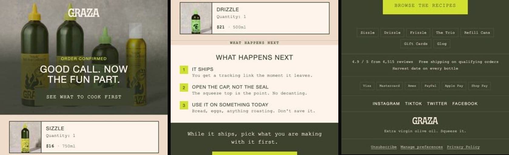
Até aqui fizeste o trabalho que só tu podes fazer: a marca, a voz, o desenho. O que vem a seguir é mecânico e é onde o tempo desaparece — recortar bandas, subir imagens uma a uma, colar HTML no editor, criar cada email do flow à mão, ligar templates, desligar o Smart Sending em cada um. São horas, e nenhuma delas melhora um email.
Isto corre num comando. Não é um plano: é o que produziu os 23 emails, os 5 flows, as 5 campanhas e o pop-up que viste ao longo destas páginas, numa conta Klaviyo a sério.
Tudo nasce em rascunho. Flows em draft, campanhas em draft, pop-up em draft. O comando nunca envia, nunca agenda e nunca activa. Se já existir um flow com o mesmo nome e estiver live, ele recusa-se a tocar-lhe.
O que o comando faz, por esta ordem
- Fatia cada email
Abre o export do Claude Design a 600px e corta-o em bandas de imagem — porque a regra é 0% de texto vivo na arte, para o email ficar exactamente igual em dark mode. - Deixa vivo o que tem de estar vivo
O rodapé (os links têm de ser clicáveis, e o unsubscribe é lei) e o bloco de produto dinâmico (senão o Klaviyo não tem nada para substituir). Um email de texto não é recortado de todo. - Troca os produtos de exemplo pelas variáveis
O cartão que desenhaste com o Sizzle a $16 sai com{{ item.product.title }}e{{ item.line_price }}dentro de um{% for %}. - Sobe as imagens e cria os templates
Cada banda vai para a biblioteca do Klaviyo e volta como URL de CDN. - Monta os flows e as campanhas
Com os atrasos certos, os assuntos, o preview text, e o Smart Sending desligado em todos os emails de flow — que é a definição que toda a gente se esquece de mudar. - Confere o que ficou lá
Lê o flow de volta da API e imprime o que encontrou. Não o que julga ter enviado.
Tenho os meus emails exportados do Claude Design na pasta emails/.
A minha chave privada do Klaviyo está em ~/.mainframe/klaviyo.key.
Constrói-me o programa de email inteiro no Klaviyo:
1. Lê a pasta emails/ e diz-me que emails encontraste e a que flow
ou campanha achas que cada um pertence. Espera que eu confirme.
2. Escreve o programa.json: para cada flow o trigger, os emails por
ordem, os dias de espera entre eles, o assunto e o preview text de
cada um. Para cada campanha o mesmo, sem esperas.
- O trigger de cada flow é o ID de uma métrica ou de uma lista da
MINHA conta. Vai buscá-los à API, não os inventes.
- Se uma métrica que o flow precisa não existir na conta, PÁRA e
diz-me qual. Não escolhas outra parecida.
3. Corre a construção. Tudo em rascunho.
4. No fim, lê de volta do Klaviyo o que criaste e mostra-me a lista:
flow, estado, emails, template de cada um, e se o Smart Sending
ficou desligado. Se algum email ficou sem unsubscribe, sem link,
ou com um [placeholder] por preencher, diz-mo antes de mais nada.
Não envies nada. Não agendes nada. Não actives nada.
Nenhuma das três está certa na documentação oficial, e cada uma custa uma tarde a quem a descobre sozinho.
Flows. O exemplo público mostra list_id, from e template_id ao nível da acção. Os três são recusados. O trigger é {"type":"list","id":"..."}, tudo o resto vive dentro de data.message, e a definição exige um entry_action_id que o exemplo nem menciona.
Formulários. ab_test é um booleano, não um objecto nem null. As colunas não têm width e os passos não têm label. E uma versão precisa de pelo menos dois passos — a captura e o ecrã de sucesso.
Carrinho abandonado. A imagem do produto não é images.first.src, é images.0.src, e precisa de recair na variante: {% if item.product.variant.images.0.src %}…{% else %}…{% endif %}.
O que ele te vai dizer que está mal
A parte mais útil do comando não é o que constrói, é o que se recusa a deixar passar em silêncio:
- Um render partido — um componente com as propriedades erradas dá um email de 60px de altura e continua a ser HTML perfeitamente válido. Sem este travão, publica-se um email vazio e só se descobre no envio.
- Um email sem unsubscribe — o Klaviyo aceita o template na mesma. É ilegal e é silencioso.
- Um
[placeholder]por preencher — a morada postal, uma política de devolução, um número que ninguém confirmou. O comando prefere avisar-te a inventar. - Uma métrica que não existe — sem Viewed Product na conta, o browse abandon não tem trigger. É a falha que trava mais gente, e não dá erro nenhum: o flow simplesmente nunca dispara.
FLOWS Graza · Welcome Flow substituo o rascunho anterior RZV9wU Ut8qn7 3 recortes · 1 vivos V8KHbB 3 recortes · 1 vivos XdFBV9 4 recortes · 1 vivos Siavjx 2 recortes · 1 vivos ✓ VfZdHS · draft · 4 emails … já existe (VpupSD) — não crio outro ──────────────────────────────── AVISOS (nada disto impede o rascunho, tudo isto impede o envio): · Graza · Site Abandon — 2 · Texto do fundador: tem um [placeholder] por preencher · Graza · Post-Purchase — 3 · Check-in do fundador: tem um [placeholder] por preencher · Graza · Campanha 4 — porque custa 16 (texto): tem um [placeholder] por preencher · Graza · Campanha 5 — uma pergunta (texto): tem um [placeholder] por preencher Tudo em rascunho. Nada foi enviado nem activado.
Saída real do comando. Repara na última secção: o que ele recusa deixar passar em silêncio — quatro emails com um [placeholder] por preencher, e um deles é a morada postal, que é obrigatória por lei.
Avançado
Quando já tiveres isto a render
O que fica de fora da versão enxuta, e a ordem por que se acrescenta.
| Passo | O que muda | |
|---|---|---|
| 1 | Abre os ramos | Comprador e não-comprador no topo de cada flow de abandono. |
| 2 | Testa a oferta | A alavanca que dobra. Não é a copy. |
| 3 | Testa o assunto do carrinho | Pelo enquadramento, não pelo open rate. |
| 4 | Sobe a cadência | Três a quatro campanhas por semana para a lista engaged. |
Os 17 emails das Partes 2 e 3 são a versão que faz a maior parte do dinheiro com o mínimo de trabalho. A versão completa que corremos em clientes é maior. Não a montes toda de uma vez — acrescenta por esta ordem, e só quando a anterior estiver a render.
- Reenvio do email 1 do welcome a quem não abriu em 24h
É a coisa com melhor rácio esforço/retorno de toda esta lista. Zero design novo: muda a subject line e o preview text, mantém o corpo. - Emails 5, 6 e 7 do welcome
Prova social dedicada, uma segunda última chance, e um email evergreen. A partir daqui a curva achata — 0,5% de compras por email. - Campanhas evergreen encaixadas no fim do welcome
Vai às campanhas passadas, identifica as de melhor performance, vê quais são relevantes o ano todo, e mete-as a seguir ao email 4. Estás a reaproveitar conteúdo comprovado. - Os 4 caminhos de post-purchase por número de compras
1x precisa de confiança, 2x de incentivo, 3x de reconhecimento, 4x+ de pertença. Na versão enxuta isto é uma variação de tom dentro do mesmo email; na completa são caminhos separados. Regra: se não vais fazer caminhos diferentes, não metas um 3x buyer no caminho dos 1x. Melhor zero conteúdo do que conteúdo irrelevante. - Flow VIP próprio
Só depois de teres gente suficiente a chegar lá. Antes disso, é uma campanha para o segmento VIP. - Separar cart de checkout
Na versão enxuta são o mesmo desenho com dois conjuntos de variáveis. Quando tiveres volume para testar cada um em separado, vale a pena diferenciar a copy: quem abandona o checkout está mais perto e aguenta menos argumentação.
Não é o calendário, é o KPI. Só acrescentas quando o email 1 do welcome estiver nos 60% de abertura e 8% de compras. Se não estiver, o teu tempo rende mais a arranjar esse email do que a montar o seguinte.
Fecho
O que fazer a seguir
Se leste isto tudo de uma vez, não faças nada hoje. Faz isto amanhã, por esta ordem:
| Quando | O quê | Nota |
|---|---|---|
| Hoje | Brand file + design system | Quinze minutos. Corrige a voz à mão. |
| Amanhã | O email 1 do welcome | Só esse. Mete-o no ar. |
| Semana 1 | Os outros flows | Por ordem: carrinho, browse, site, pós-compra. |
| Semana 2 | As campanhas | Três por semana, uma promocional por mês. |
- Escreve o brand file e cria o design system — quinze minutos, prompt 00. Corrige a secção da voz à mão.
- Faz o email 1 do welcome flow — prompt 11. Só esse. Mete-o no ar.
- Se o welcome flow já existe, arranja-lhe o email 1 — 60% de abertura e 8% de compras. Se não estás lá, é aí que está o dinheiro.
- Só depois vai para os outros flows, e só depois disso para as campanhas.
A ordem importa mais do que parece. A tentação é montar tudo ao mesmo tempo porque agora é rápido. Mas um welcome flow excelente vale mais do que cinco flows medianos — é 65% da faturação dos flows e 16% do negócio inteiro.